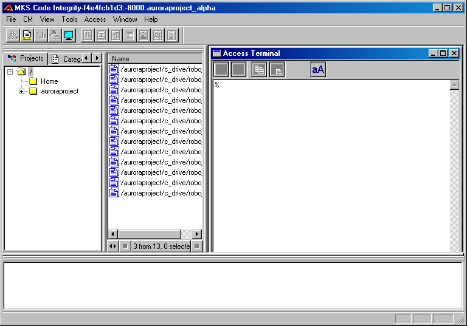
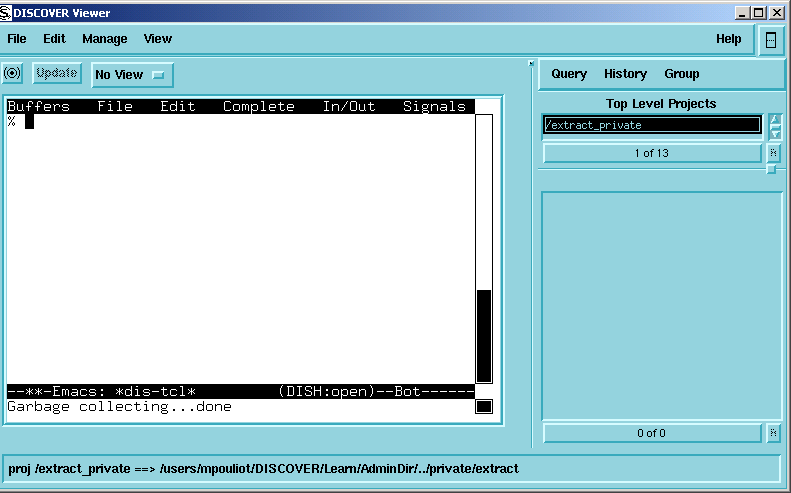
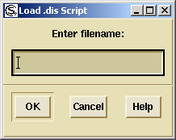

DIScover 7.5
Access Guide


Table of Contents
Chapters
1
Welcome to Access . . . . . . . . . . . . . . . . . . . . . . . . . . . . . . . 1
About This Guide . . . . . . . . . . . . . . . . . . . . . . . . . . . . . . . . . . . . . . . . . . . 2
Related Documentation . . . . . . . . . . . . . . . . . . . . . . . . . . . . . . . . . . . . . . 3
Typographical Conventions . . . . . . . . . . . . . . . . . . . . . . . . . . . . . . . . . . 5
What’s New in This Release . . . . . . . . . . . . . . . . . . . . . . . . . . . . . . . . . . 6
Roles . . . . . . . . . . . . . . . . . . . . . . . . . . . . . . . . . . . . . . . . . . . . . . . . . . . . . . 6
Assumptions . . . . . . . . . . . . . . . . . . . . . . . . . . . . . . . . . . . . . . . . . . . . . . . 6
Getting Help . . . . . . . . . . . . . . . . . . . . . . . . . . . . . . . . . . . . . . . . . . . . . . . 7
Professional Services . . . . . . . . . . . . . . . . . . . . . . . . . . . . . . . . . . . . . . . . 8
Documentation Feedback . . . . . . . . . . . . . . . . . . . . . . . . . . . . . . . . . . . . 9
Where To Go From Here . . . . . . . . . . . . . . . . . . . . . . . . . . . . . . . . . . . . 10
2
Understanding Access . . . . . . . . . . . . . . . . . . . . . . . . . . . . 11
About Access . . . . . . . . . . . . . . . . . . . . . . . . . . . . . . . . . . . . . . . . . . . . . . 12
Applications of Access . . . . . . . . . . . . . . . . . . . . . . . . . . . . . . . . . . . . . . 13
Samples of Access Programming . . . . . . . . . . . . . . . . . . . . . . . . . . . . . 13
Lines of Code in a Model . . . . . . . . . . . . . . . . . . . . . . . . . . . . . . . . 13
Include File Naming Conventions . . . . . . . . . . . . . . . . . . . . . . . . 15
Static Functions Declared in Header Files . . . . . . . . . . . . . . . . . . 16
3
Getting Started With Access . . . . . . . . . . . . . . . . . . . . . . . 17
Interactive Access Sessions on UNIX . . . . . . . . . . . . . . . . . . . . . . . . . . 18
Using Access in a Viewer . . . . . . . . . . . . . . . . . . . . . . . . . . . . . . . . 18
Starting Access Mode . . . . . . . . . . . . . . . . . . . . . . . . . . . . . . . . . . . 19
Interpreting the Access Buffer . . . . . . . . . . . . . . . . . . . . . . . . . . . 20
Autoloading Access Commands . . . . . . . . . . . . . . . . . . . . . . . . . 21
Access from the UNIX Command Line . . . . . . . . . . . . . . . . . . . . . . . . 22
Connecting to a model_server Using dish2 . . . . . . . . . . . . . . . . 22
User Interface Customization on UNIX . . . . . . . . . . . . . . . . . . . . . . . 23
Browser Menu Creation Commands . . . . . . . . . . . . . . . . . . . . . . 23
Menu Creation Example . . . . . . . . . . . . . . . . . . . . . . . . . . . . . . . . 24
Interface Commands . . . . . . . . . . . . . . . . . . . . . . . . . . . . . . . . . . . 25
Interactive Access Sessions on Windows . . . . . . . . . . . . . . . . . . . . . . 25
Autoloading Access Commands . . . . . . . . . . . . . . . . . . . . . . . . . 27
Access Menu . . . . . . . . . . . . . . . . . . . . . . . . . . . . . . . . . . . . . . . . . . . . . . 28
Open DISH . . . . . . . . . . . . . . . . . . . . . . . . . . . . . . . . . . . . . . . . . . . . 29
Utilities . . . . . . . . . . . . . . . . . . . . . . . . . . . . . . . . . . . . . . . . . . . . . . . 30
Action . . . . . . . . . . . . . . . . . . . . . . . . . . . . . . . . . . . . . . . . . . . . . . . . 30
i
Table of Contents
Convert . . . . . . . . . . . . . . . . . . . . . . . . . . . . . . . . . . . . . . . . . . . . . . . 32
AST . . . . . . . . . . . . . . . . . . . . . . . . . . . . . . . . . . . . . . . . . . . . . . . . . . 32
TPM . . . . . . . . . . . . . . . . . . . . . . . . . . . . . . . . . . . . . . . . . . . . . . . . . . 33
Category . . . . . . . . . . . . . . . . . . . . . . . . . . . . . . . . . . . . . . . . . . . . . . 34
Query . . . . . . . . . . . . . . . . . . . . . . . . . . . . . . . . . . . . . . . . . . . . . . . . 35
Filter . . . . . . . . . . . . . . . . . . . . . . . . . . . . . . . . . . . . . . . . . . . . . . . . . 35
Project . . . . . . . . . . . . . . . . . . . . . . . . . . . . . . . . . . . . . . . . . . . . . . . . 36
Report . . . . . . . . . . . . . . . . . . . . . . . . . . . . . . . . . . . . . . . . . . . . . . . . 36
4
Access Fundamentals . . . . . . . . . . . . . . . . . . . . . . . . . . . . 37
Data Types . . . . . . . . . . . . . . . . . . . . . . . . . . . . . . . . . . . . . . . . . . . . . . . . 38
Symbols . . . . . . . . . . . . . . . . . . . . . . . . . . . . . . . . . . . . . . . . . . . . . . 38
Instances . . . . . . . . . . . . . . . . . . . . . . . . . . . . . . . . . . . . . . . . . . . . . . 38
AST Nodes . . . . . . . . . . . . . . . . . . . . . . . . . . . . . . . . . . . . . . . . . . . . 39
Data Cells . . . . . . . . . . . . . . . . . . . . . . . . . . . . . . . . . . . . . . . . . . . . . 39
Data Type Conversions . . . . . . . . . . . . . . . . . . . . . . . . . . . . . . . . . 39
Attributes and Attribute Expressions . . . . . . . . . . . . . . . . . . . . . . . . . 40
Simple Attribute Expressions: Attributes . . . . . . . . . . . . . . . . . . 41
Attribute Functions . . . . . . . . . . . . . . . . . . . . . . . . . . . . . . . . . . . . . 41
Useful Attributes . . . . . . . . . . . . . . . . . . . . . . . . . . . . . . . . . . . . . . . 42
Metric Attributes . . . . . . . . . . . . . . . . . . . . . . . . . . . . . . . . . . . . . . . 43
Compound Attribute Expressions . . . . . . . . . . . . . . . . . . . . . . . . 44
Shortcuts . . . . . . . . . . . . . . . . . . . . . . . . . . . . . . . . . . . . . . . . . . . . . . 44
Tcl Variables . . . . . . . . . . . . . . . . . . . . . . . . . . . . . . . . . . . . . . . . . . 45
Sets . . . . . . . . . . . . . . . . . . . . . . . . . . . . . . . . . . . . . . . . . . . . . . . . . . . . . . 46
Set Creation . . . . . . . . . . . . . . . . . . . . . . . . . . . . . . . . . . . . . . . . . . . 46
Set Semantics . . . . . . . . . . . . . . . . . . . . . . . . . . . . . . . . . . . . . . . . . . 47
Iteration . . . . . . . . . . . . . . . . . . . . . . . . . . . . . . . . . . . . . . . . . . . . . . 47
About the Print Procedure . . . . . . . . . . . . . . . . . . . . . . . . . . . . . . . 47
Procedures . . . . . . . . . . . . . . . . . . . . . . . . . . . . . . . . . . . . . . . . . . . . . . . . 48
Project Structure, or Browse Mode Queries . . . . . . . . . . . . . . . . 48
Entity and Relationship Queries . . . . . . . . . . . . . . . . . . . . . . . . . . 49
Access Specific Commands . . . . . . . . . . . . . . . . . . . . . . . . . . . . . . . . . . 51
Set Operations . . . . . . . . . . . . . . . . . . . . . . . . . . . . . . . . . . . . . . . . . 51
Miscellaneous Commands . . . . . . . . . . . . . . . . . . . . . . . . . . . . . . . 53
Groups . . . . . . . . . . . . . . . . . . . . . . . . . . . . . . . . . . . . . . . . . . . . . . . . . . . 55
Group Commands . . . . . . . . . . . . . . . . . . . . . . . . . . . . . . . . . . . . . 55
Group Subcommands . . . . . . . . . . . . . . . . . . . . . . . . . . . . . . . . . . . 56
Importing and Exporting Groups . . . . . . . . . . . . . . . . . . . . . . . . . 56
Closure . . . . . . . . . . . . . . . . . . . . . . . . . . . . . . . . . . . . . . . . . . . . . . . . . . . 57
5
Tree Pattern Matching . . . . . . . . . . . . . . . . . . . . . . . . . . . . 59
Abstract Syntax Trees . . . . . . . . . . . . . . . . . . . . . . . . . . . . . . . . . . . . . . . 60
AST Nodes . . . . . . . . . . . . . . . . . . . . . . . . . . . . . . . . . . . . . . . . . . . . . . . . 61
Converting Entities . . . . . . . . . . . . . . . . . . . . . . . . . . . . . . . . . . . . . 61
ii
a c c e s s g u i d e

Table of Contents
Automatic Conversions . . . . . . . . . . . . . . . . . . . . . . . . . . . . . . . . . 62
Displaying the AST . . . . . . . . . . . . . . . . . . . . . . . . . . . . . . . . . . . . . . . . . 62
Attributes of AST Nodes . . . . . . . . . . . . . . . . . . . . . . . . . . . . . . . . . . . . 63
Accessing Symbol Attributes . . . . . . . . . . . . . . . . . . . . . . . . . . . . 65
Tree Subcommands . . . . . . . . . . . . . . . . . . . . . . . . . . . . . . . . . . . . . . . . 65
Navigation in Attribute Expressions . . . . . . . . . . . . . . . . . . . . . . . . . . 68
Tree Navigation . . . . . . . . . . . . . . . . . . . . . . . . . . . . . . . . . . . . . . . . 69
Find and Search Attribute Functions . . . . . . . . . . . . . . . . . . . . . . . . . . 70
Attribute Iterators . . . . . . . . . . . . . . . . . . . . . . . . . . . . . . . . . . . . . . . . . . 71
Variable Capture in Attribute Expressions . . . . . . . . . . . . . . . . . . . . . 72
Attribute Expression Actions . . . . . . . . . . . . . . . . . . . . . . . . . . . . . . . . 73
Writing Efficient TPM Expressions . . . . . . . . . . . . . . . . . . . . . . . . . . . 73
Optimize the Scope of Your Searches . . . . . . . . . . . . . . . . . . . . . 73
Manage the ASTs in Memory . . . . . . . . . . . . . . . . . . . . . . . . . . . . 73
Simple Examples . . . . . . . . . . . . . . . . . . . . . . . . . . . . . . . . . . . . . . . 74
Advanced Applications . . . . . . . . . . . . . . . . . . . . . . . . . . . . . . . . . 74
6
Change Propagation . . . . . . . . . . . . . . . . . . . . . . . . . . . . . . 79
Event Sequence . . . . . . . . . . . . . . . . . . . . . . . . . . . . . . . . . . . . . . . . . . . . 80
Diff Initialization and Finalization . . . . . . . . . . . . . . . . . . . . . . . . . . . . 80
Making Changes . . . . . . . . . . . . . . . . . . . . . . . . . . . . . . . . . . . . . . . . . . . 81
Applying Diffs . . . . . . . . . . . . . . . . . . . . . . . . . . . . . . . . . . . . . . . . . . . . . 82
diff_tpm_all . . . . . . . . . . . . . . . . . . . . . . . . . . . . . . . . . . . . . . . . . . . . . . . 85
7
Source Mode Queries . . . . . . . . . . . . . . . . . . . . . . . . . . . . . 87
SMT Structure . . . . . . . . . . . . . . . . . . . . . . . . . . . . . . . . . . . . . . . . . . . . . 88
Obtaining an SMT Node . . . . . . . . . . . . . . . . . . . . . . . . . . . . . . . . . . . . 88
SMT Navigation . . . . . . . . . . . . . . . . . . . . . . . . . . . . . . . . . . . . . . . . . . . 89
SMT Attributes . . . . . . . . . . . . . . . . . . . . . . . . . . . . . . . . . . . . . . . . . . . . 90
Printing the SMT Example . . . . . . . . . . . . . . . . . . . . . . . . . . . . . . . . . . 91
SMT/CP Operations . . . . . . . . . . . . . . . . . . . . . . . . . . . . . . . . . . . . . . . . 92
SMT Change Commands . . . . . . . . . . . . . . . . . . . . . . . . . . . . . . . . 93
Auxiliary Commands . . . . . . . . . . . . . . . . . . . . . . . . . . . . . . . . . . . 93
Appendixes
A
Access Commands . . . . . . . . . . . . . . . . . . . . . . . . . . . . . . 95
Project Commands . . . . . . . . . . . . . . . . . . . . . . . . . . . . . . . . . . . . . . . . . 96
Query Commands . . . . . . . . . . . . . . . . . . . . . . . . . . . . . . . . . . . . . . 96
Set Operation Commands . . . . . . . . . . . . . . . . . . . . . . . . . . . . . . . 99
Group Operation Commands . . . . . . . . . . . . . . . . . . . . . . . . . . . 100
Auxiliary Commands . . . . . . . . . . . . . . . . . . . . . . . . . . . . . . . . . . 101
Kind Attributes . . . . . . . . . . . . . . . . . . . . . . . . . . . . . . . . . . . . . . . 102
Integer Attributes . . . . . . . . . . . . . . . . . . . . . . . . . . . . . . . . . . . . . 104
Boolean Attributes . . . . . . . . . . . . . . . . . . . . . . . . . . . . . . . . . . . . 105
String Attributes . . . . . . . . . . . . . . . . . . . . . . . . . . . . . . . . . . . . . . 108
Metric Attributes . . . . . . . . . . . . . . . . . . . . . . . . . . . . . . . . . . . . . . 110
iii
Table of Contents
Applying Attributes . . . . . . . . . . . . . . . . . . . . . . . . . . . . . . . . . . . 112
Attribute Expressions . . . . . . . . . . . . . . . . . . . . . . . . . . . . . . . . . . . . . . 112
C Function Attribute Expressions . . . . . . . . . . . . . . . . . . . . . . . 113
Miscellaneous Commands and Expressions . . . . . . . . . . . . . . . 114
Interface Commands . . . . . . . . . . . . . . . . . . . . . . . . . . . . . . . . . . 115
B
Attribute Expression Grammar . . . . . . . . . . . . . . . . . . . 117
Typographical Conventions for Backus-Naur Form . . . . . . . . . . . . 118
TPM Expression Syntax . . . . . . . . . . . . . . . . . . . . . . . . . . . . . . . . 118
TPM Expression Variables . . . . . . . . . . . . . . . . . . . . . . . . . . . . . . 118
C
AST_node Attributes . . . . . . . . . . . . . . . . . . . . . . . . . . . . 123
AST_node Attribute Codes . . . . . . . . . . . . . . . . . . . . . . . . . . . . . . . . . 124
Samples for C++, Java, and SQL . . . . . . . . . . . . . . . . . . . . . . . . . . . . . 129
D
Access Quick Reference . . . . . . . . . . . . . . . . . . . . . . . . . 141
E
Glossary of Terms . . . . . . . . . . . . . . . . . . . . . . . . . . . . . . 147
iv
a c c e s s g u i d e


Welcome to Access
1
Access, the TCL-based programming language behind many DIScover operations, is key to advanced deployment of
your DIScover system.
This chapter discusses the following topics:
“About This Guide” on page 2
“Related Documentation” on page 3
“Typographical Conventions” on page 5
“What’s New in This Release” on page 6
“Roles” on page 6
“Assumptions” on page 6
“Getting Help” on page 7
“Professional Services” on page 8
“Documentation Feedback” on page 9
“Where To Go From Here” on page 10
1
Chapter 1: Welcome to Access
About This Guide
The following section details individual chapter content:
Chapter 2: “Understanding Access” (page 11)
Defines Access, offers a brief history of the tool, and outlines some of
its key applications. The chapter concludes with samples of Access
programming that use the DIScover learn environment.
Chapter 3: “Getting Started With Access” (page 17)
Explains how to use Access in Unix and Windows environments.
Chapter 4: “Access Fundamentals” (page 37)
Presents key Access concepts such as available data types, attributes
and attribute expressions, sets and groups, and common procedures.
Chapter 5: “Tree Pattern Matching” (page 59)
Explains DIScover Tree Pattern Matching (TPM) technology and
how it can be used to analyze vast regions of code for potential
programming flaws. It includes a discussion of the Abstract Syntax
Tree (AST), the data structure that serves as a foundation for all TPM
technology. It presents TPM find procedures and conventions, as well
as tips for writing effective TPM expressions.
Chapter 6: “Change Propagation” (page 79)
Explains how to use TPM technology to automate global changes to
your source code. It includes a discussion of Access diff files, how to
view, merge and apply them, and resolve conflicts that may occur
during a change procedure.
Chapter 7: “Source Mode Queries” (page 87)
Presents the key concept of the Source Mode Tree (SMT), the
mechanism DIScover uses to map between the source text and
the elements in the information model. The chapter also includes a
discussion of SMT navigation, attributes, and standard operations.
Appendix A: “Access Commands” (page 95)
Presents a comprehensive list of available Access commands and
attribute expressions.
Appendix B: “Attribute Expression Grammar” (page 117)
Presents typographical conventions for working with Access and
outlines TPM expression syntax and variables.
2
a c c e s s
g u i d e

Related Documentation
Appendix C: “AST_node Attributes” (page 123)
Provides a comprehensive list of ast_node attribute codes as well as
samples for C++, Java, and SQL programming languages.
Appendix D: “Access Quick Reference” (page 141)
Provides a key to most commonly used Access commands, queries,
and attributes.
Appendix E: “Glossary of Terms” (page 147)
Describes common DIScover terms.
Related Documentation
To provide you with the most convenient means of retrieving information,
product documentation is available in several formats: print, Adobe
Acrobat’s Portable Document Format (PDF), and online help.
Documentation
Print
PDF
Online
DIScover
Yes
Yes
Yes
Installation and Administration Guide
DIScover User
No
Yes
Yes
Guide for Windows
DIScover User
No
Yes
Yes
Guide for UNIX
DIScover
No
Yes
Yes
Access Guide
Release Notes
No
No
Yes
PDF files are located in the \pdf subdirectory of the distribution CD. To
view them, you must have Adobe Acrobat Reader™ installed on your
machine. You can install the reader by running the setup program in the
\acrobat subdirectory on the CD. Once you have installed the reader,
whenever you open a PDF file the reader starts automatically.
3


Chapter 1: Welcome to Access
You can access online help from within the Model Browser in the following
ways:
Selecting Help > Contents.
Press F1.
NOTE
The online help is not context-sensitive.
From the Model Browser online help, you can display the Access online
help by clicking
. To display the Model Browser online help again, click
in the Access online help.
In addition to the DIScover Enterprise Edition Access Guide, the other
documentation included in this release is as follows:
DIScover Installation and Administration Guide
provides installation instructions for DIScover; an overview of
DIScover concepts and features; and information on creating,
building, and managing information models.
DIScover User Guide for Windows explains how to
use all the features of the DIScover Model Browser and
Developer XPress client on the Windows platform.
DIScover User Guide for UNIX explains how to
use all the features of the DIScover Model Browser and
Developer XPress client on the UNIX platform.
Online release notes provide the most up-to-date details about this
release. You should review these notes as they may contain
information that only became available after the printed
documentation went to press. You can read the release notes in the
CD Browser or as HTML documents in a Web browser.
4
a c c e s s
g u i d e

Typographical Conventions
Typographical Conventions
Throughout this guide, the following typographical conventions identify
the features, functions, and components of DIScover:
Items in Documentation
Appear as
Menus, commands
Tools > Caliper
Drop-down menus
the Session command
Dialog boxes, features
Edit Options, Cancel, OK
Screen information, messages
Enter the new group name:
Environment Variables
TMPDIR
Path names
c:\scrint\work
New terms
appear in italics the first time
Keyboard keys
appear in caps, for example ENTER
Keyboard shortcuts
Keyboard: ALT, I, N
NOTE
A note provides you with information that supplements the key points of the
subject. A note may also supply information that applies only in particular
cases.
IMPORTANT
An important note provides you with information that is essential for
completing a task.
CAUTION
A caution note advises you about situations that have the potential to result in
a loss of data.
5
Chapter 1: Welcome to Access
What’s New in This Release
For more detailed information on the following features, see the
CodeIntegrityWhatsNew.pdf located in the \pdf subdirectory of the
distribution CD.
simplified build scripts
more robust installation
administration GUI
incremental model builds
additional impact queries
integration with MKS Integrity Manager
print/save/export capabilities
Roles
There are two main roles when using DIScover: The administrator
installs and configures DIScover, builds and validates information
models, starts and stops servers, performs regular housekeeping for model
builds, clears out old models, and sets up new DIScover users. The
user is anyone who needs to work with DIScover information models.
Assumptions
Before using DIScover, we assume the following about your
knowledge and experience:
You fully understand the hardware platforms and operating systems
you are installing DIScover on, that is, Windows, Solaris, and
HP-UX.
You understand the programming languages used in your source
code, that is, ANSI C/C++, Visual C++, K&R C, Java, Oracle SQL,
Informix SQL, and Sybase SQL.
You understand the compilers used to build your software projects,
that is, Microsoft Visual C++, Sun cc, Sun WorkShop C++, GNU C/
C++, HP cc, HP aC++, and Sun SDK Java.
6
a c c e s s
g u i d e

Getting Help
Getting Help
7
Chapter 1: Welcome to Access
8
a c c e s s
g u i d e

9
Chapter 1: Welcome to Access
Where To Go From Here
To Do This …
See …
Understand how Access works.
“Understanding Access” on page 11
Start Access.
“Getting Started With Access” on
page 17
Learn the fundamentals of Access.
“Access Fundamentals” on page 37
Analyze vast regions of source code
“Tree Pattern Matching” on page 59
for potential programming flaws.
Automate tedious and error-prone
“Change Propagation” on page 79
operations on source code.
Identify information model entities from
“Source Mode Queries” on page 87
text selections in your editor.
Learn all available Access commands
“Access Commands” on page 95
and attribute descriptions.
Learn attribute-expression grammar.
“Attribute Expression Grammar” on
page 117
View AST_node attributes.
“AST_node Attributes” on page 123
View the quick reference for common
“Access Quick Reference” on
Access commands, queries, and
page 141
attributes.
Learn DIScover terms.
“Glossary of Terms” on page 147
10
a c c e s s
g u i d e


Understanding Access
2
KEY TERMS: Tcl, tree pattern matching, change propagation
Access is a Tcl-based language that allows you to write scripts to perform
complex operations with DIScover. You can invoke these scripts in
numerous ways: attach them to menu items, call them in a Caliper session,
or connect them to particular DIScover events like checkin. You can
design scripts to write output to files, to groups, to DIScover
Browsers and viewers, and more. In addition, you can create scripts that
calculate new attributes that can be used in list filters and reports, as well
as in Access scripts.
This chapter covers the following topics:
“About Access” on page 12
“Applications of Access” on page 13
“Samples of Access Programming” on page 13
11
Chapter 2: Understanding Access
About Access
Access is more than an important tool in the DIScover family. It underlies the
functionality of database queries and set operations, plus the
specializations of:
Tree Pattern Matching, used to examine and traverse the parse tree
Change Propagation, used to make automated changes to source
Access scripts can be used again and again; the possibilities are endless.
For example, you can apply the same kind of analysis used in one project
to another project. Or, you can apply an existing automated tool that you
use every day to transform software to newly purchased source code
bases. Scripts written by one developer can be distributed to others,
leveraging that developer’s expertise in a problem domain.
If the needs of your organization are particularly specialized, Access
provides the mechanism for tailoring DIScover to those needs. For
example, an embedded environment’s debugger may have limitations on
setting breakpoints that mean that the conditional operator should not be
used, that an if statement should be used instead. You can write an Access
script to detect this and add it to the Quality Assessment Report, if
necessary. Or, if your organization has a sophisticated checklist for impact
analysis or code reviews, you can support these in an automatic fashion
using Access.
Because Access scripts can be applied to the code base at any time, they
offer advantages over manual changes for long-duration projects. Consider
a porting project that extends over a couple of months. One team of
developers would have to check each file for non-portable constructs, fix
issues found in that file, and then move on to the next. Over the course of
the project, developers assigned to other projects have the opportunity to
reintroduce non-portable constructs. With an Access script that detects the
constructs found in the first pass, the porting team can periodically
revalidate their work.
The fast turnaround time of Change Propagation scripts offers tremendous
advantages, making it possible to change a large number of files in a short
time. This often reduces the need for merges because a file spends less time
checked out, and it can offer the potential of scheduling changes: you can
develop and test the Change Propagation script without actually
submitting the changes. Then, when your team is ready for those changes
(say, early in the next release cycle), you can introduce them quickly and
efficiently.
12
a c c e s s
g u i d e

Applications of Access
Applications of Access
Access was originally developed to address the large-scale Y2K problem.
Since then, it has been used to provide a customizable impact analysis
functionality and provide the foundation for all the queries in Quality
Assessment Reporting. It serves as the foundation for Tree Pattern
Matching technology, Change Propagation, and Dormant Analysis.
Samples of Access Programming
The following samples of Access programming are used with the DIScover Learn environment.
NOTE
When developing scripts, it is easiest if you work on a model that is not too big:
it is helpful to be able to scroll back to see your last couple of queries and to
correlate the query with the result set. As you progress in expertise, you will
develop ways of interacting with large result sets, and, of course, when
running scripts on your production model the question of what fits on the
screen becomes secondary to the problem at hand.
Lines of Code in
Open an Access prompt. If you are running a model server, do either of the
following:
a Model
Use dish2 -hosts, dish2 -list host, and dish2 service
-connect host to get an Access prompt.
See the following chapters on platform-specific ways of connecting to
a model server.
Once at the Access prompt (a % sign), type:
roots
13
Chapter 2: Understanding Access
You should see output similar to the following; it will include a list of the
top-level projects in your model:
1 (proj) /extract_private
2 (proj) /xip_private
3 (proj) /ttt_private
4 (proj) /package_private
5 (proj) /xcalentool_private
6 (proj) /extract_shared
7 (proj) /xip_shared
8 (proj) /ttt_shared
9 (proj) /package_shared
10 (proj) /xcalentool_shared
11 (proj) /sysinclude
Check to see how many files are in this model. Type:
size [defines -files /]
311
The Access prompt is provided by a Tcl interpreter; you can enter any Tcl
command:
for {set i 0} {$i < 10} {incr i} {puts $i}
1
2
...
foreach x {2 5 10 3} {puts $x}
2
5
10
3
Now that you have established your bearings, it is time to do something
useful. Enter the following five lines (three commands) at the interpreter
prompt:
set total_loc 0
foreach x [defines -files /] {
incr total_loc [apply met_LOC $x]
}
puts $total_loc
76450
This example introduces a couple of features of Access. The set, puts, and
incr commands are all standard Tcl. Considering the rest in turn:
defines -files /
14
a c c e s s
g u i d e

Samples of Access Programming
The defines query is analogous to the root level queries in the Browser. It
takes an optional first argument (in this case, -files) that filters the result
based on type (other options include -functions, -variables, -macros,
and so on). Subsequent arguments to defines make up a “scope”— the
domain the query is applied to. The domain must be a file or project; in this
case, it is the root scope (or everything).
foreach
The result of the defines function is a special DIScover “set” that
efficiently handles large numbers of objects. Tcl’s foreach command has
been overloaded to Access this special DIScover set. In practice, it
behaves as you would expect Tcl’s foreach to behave: it iterates through
each of the members of the set, setting the variable x to a handle for each of
the members in turn.
apply met_LOC
Access provides a facility (apply) for accessing attributes of Information
Model symbols. These may be attributes like metrics (in this case, lines of
code, but could be met_CC (cyclomatic complexity), met_RETURNS
(number of return statements), or others), or can describe the entity’s
defining file, arguments, and so on.
Include File
set all_files [defines -files /]
1 (module) /extract/src/sys2.c
Naming
2 (module) /extract/src/sys1.c
Conventions
...
311 (module) /sysinclude/ctype.h
set included_files [get_include_files $all_files]
1 (module) /extract/src/global_vars.h
2 (module) /extract/src/proto.h
...
237 (module) /sysinclude/bytesex.h
15
Chapter 2: Understanding Access
These two commands may be too simple to appear interesting. However,
you can filter the result to identify header files that have non-standard
extensions:
set hfiles [filter {match("*.h")} $included_files]
1 (module) /extract/src/global_vars.h
2 (module) /extract/src/proto.h
...
202 (module) /sysinclude/bytesex.h
set unusual_header_files [set_subtract $included_files
$hfiles]
1 (module) /ttt/include/square.H
2 (module) /ttt/include/player.H
...
34 (module) /xcalentool/src/std_icon.xbm
35 (module) /xcalentool/src/month.cursor
Static
Header files are meant to be shared. Static declarations, however, are not
shared. It is unusual to combine the two, and it may be of interest to find
Functions
all the symbols declared static in included files. In the next example, the
Declared in
included_files variable previously set are used.
Header Files
set declares [get_declares $included_files]
1 (var) glob_var1
2 (var) glob_var2
3 (funct) DB_e
...
296 (struct) streambuf
set static_in_include [filter static $declares]
As in the first example that used the metric_LOC attribute, this example
makes use of an attribute (static). Instead of applying the attribute as a
function, in this case it is used as a simple “attribute-expression”—the first
parameter to the filter command.
Hopefully, this sample did not report any hits. There are a couple of
variations you could try to make the output more interesting:
Look for static entities declared in source files:
filter static [set.subtract
$all.files $included_files]
Look for non-static entities declared in a single header file:
filter {! static} [get_declares main.h]
16
a c c e s s
g u i d e


Getting Started With
Access
3
KEY TERMS: interactive Access session, dish, access mode, access buffer,
model_server
This chapter provides instructions for launching Access on UNIX and
Windows, including working within an interactive session and from the
command line in both environments. It also provides information on
customizing your UNIX user interface to add menu items and
functionality.
This chapter covers:
“Interactive Access Sessions on UNIX” on page 18
“Access from the UNIX Command Line” on page 22
“User Interface Customization on UNIX” on page 23
“Interactive Access Sessions on Windows” on page 25
“Access Menu” on page 28
17
Chapter 3: Getting Started With Access
Interactive Access Sessions on UNIX
Before you can do anything with Access, you need to be able to start it.
This section shows you how to use Access interactively.
Using Access in
In DIScover, Access is available from an Emacs session in the Viewer.
You need to open an Emacs session and invoke Access mode. Access mode
a Viewer
uses Tcl mode as its foundation, incorporating Tcl functionality with the
functionality of Access. As a result, you can use Access mode as you would
use Tcl mode in any Emacs session.
For example, if you have the DIScover Browser open, and you want
to start Access.
To start Access
In the Browser, select Access > Open Dish.
The Viewer appears with an Emacs session. Emacs splits into two buffers.
One Emacs buffer’s status line now shows (DISH:open).
At this point, you can enter Access commands and send them to the
interpreter.
18
a c c e s s
g u i d e

Interactive Access Sessions on UNIX
Alternatively, you can open Dish using the Viewer menu.
1 In the Browser, select Viewer > New Viewer.
The Viewer appears with an Emacs session.
2 Type:
Esc-x dish
NOTE
If you already have a Viewer session open, you can execute step 3 at any time.
3 Press ENTER.
The Viewer appears with the Emacs session.
Starting Access
Alternatively, you can choose to put a buffer in Access mode. From an
Access buffer, you can send components to the Access interpreter; Code
Mode
Integrity shows the interpreter in an opposite buffer.
To put a buffer in Access mode
1 In an Emacs buffer, execute the Access mode function by typing:
Esc-x dis-tcl-mode
2 Press ENTER.
19
Chapter 3: Getting Started With Access
The active Emacs buffer changes to Access mode, adding a
Dis-Tcl-Mode Emacs menu.
Interpreting the
In an Access buffer, you can construct commands or Tcl-style functions
(known as procedures) and send them to the interpreter. The Dis-Tcl-Mode
Access Buffer
menu lets you send parts or all of the lines in the buffer to the interpreter.
20
a c c e s s
g u i d e

Interactive Access Sessions on UNIX
Each option in this menu corresponds with an Emacs command. The Send
Buffer option, for example, corresponds with the Emacs command
dis-tcl-send-buffer, which you can also execute with Esc-x
dis-tcl-send-buffer. For a complete list of Emacs Access menu
commands, see the Emacs on-line help (C-h a dis).
Once you start sending data to the interpreter, Emacs opens the interpreter
in a second buffer. This buffer shows the final output from your Access
instructions, for example:
This example shows the tail end of the output for the four Access
commands in the top buffer. The output shows the kind, name, and lines of
code (a metric) for each file in the /ttt_shared project.
Autoloading
Access lets you automatically load options as you start DIScover. This
can be useful in setting up specific sets ahead of time, or configuring the
Access
DIScover user interface (see “User Interface Customization on UNIX”
Commands
on page 23).
To autoload a file of Access commands
1 Create a file in your home account named ~/.CODEINTEGRITY.dis.
21
Chapter 3: Getting Started With Access
2 Populate the file with Access commands, for example:
add_menu constructor {method&&scope==cname}
add_menu destructor {method&&cname[0]==’~’}
#comment
#add_menu two arg(2)
Access from the UNIX Command Line
When you work with Access interactively, you automatically connect to
the model server that supports your browser and viewer. Your DIScover administrator is responsible for maintaining models and
starting/stopping model servers using DISIM. However, the following
instructions are provided in the event that you want or need to start a
model server on your own.
To start a model_server as a server on UNIX
1 Open the command console.
2 Enter the following to set the ADMINDIR environment variable:
setenv ADMINDIR <path to model>
3 Set the other environment variables referenced in the PDF file of the
model by entering:
setenv <environment variable> <required field>
Examples:
sharedSrcRoot <path to source files>
sharedModelRoot <path to model>
privateSrcRoot <path to private source files>
privateModelRoot <path to private model>
4 Start model_server by typing the following into the command line:
model_server -prefs <path to the *.prefs file> -pdf
<path to the *.pdf file> -home <home_project_name>
-server -server_name CODEINTEGRITY:<server_name> &
Connecting to a
dish2 is a small client program that connects to model servers and
provides a command line to an Access interpreter.
model_server
Using dish2
To connect to model_server with dish2 on UNIX and Windows
1 Open the command console.
22
a c c e s s
g u i d e

User Interface Customization on UNIX
2 Enter the following command, which lists all model services on the
specified host(s).
dish2 -list <host1> <host2> ...
3 To connect model_server with dish2, enter into the command
console:
dish2 <service> -connectpset <host1>
The dish2 command prompt (%) displays.
User Interface Customization on UNIX
Access provides a series of commands to perform the following operations:
add menu items to the Browser
use selections from scan mode as part of Access queries
send output to the Browser
With these capabilities and Access, you can create an interface with an
external tool and make it available via the Browser. This section shows you
what these Access commands are and how they work.
Browser Menu
Access menu commands let you add new menus to the Browser as well as
to select existing menus in the Browser. These select menus are:
Creation
Commands
Category
Query
Action
The following table shows a list of Access menu commands:
Menu Command
Description
add_menu
Adds a menu to the Browser’s menu bar; allows cascading
menus.
add_menu
menu_name.submenu_1_name.submenu_2_nam
e
add_item
Adds an item to one of the Browser menus where
command_string is the action initiated by the item.
add_item menu item_name command_string
add_separat
Adds a separator to the specified menu.
or
add_separator menu
23
Chapter 3: Getting Started With Access
The add_menu command has its own syntax:
add_menu tag
Its associated command, add_item, uses similar syntax:
add_item menu tag command [selection] [display]
In these commands:
menu (add_item only) is the parent menu name.
tag refers to the name you want to appear in the menu.
command refers to the Access command you want the menu operation
to invoke (you can use Tcl procedures).
selection (optional) is a Browser-based selection that acts as input
for an Access command. Choose from the selection options to specify
which Browser functionality Access uses:
-selection, (default) the current selection in the Browser
-scope, the scope as established in the Project text field
-filter, all entities in the current selection’s column
-none, no selection
-optional, the current selection, allows no selection
display (optional) refers to Access command output destination.
Works only with the Browser; display options include:
-result shows output in the Results column
-element shows output in the Elements column
If you do not specify a column, Access sends output to the last, non-
active column (sending it to the Results column if data just appeared
in the Elements column).
Non-Information Model results appear in the status bar at the bottom
of the Browser.
Menu Creation
The following example uses built-in functions; you may instead call your
own procedures:
Example
add_item Access.roots roots
add_item Access.contents contents
24
a c c e s s
g u i d e

Interactive Access Sessions on Windows
Interface
There is an additional set of commands that serve to communicate with the
Browser or a user. These commands are:
Commands
Interface
Description
Command
get_selecti
Places the entities selected in the Browser Elements or
on
Results columns into the current set.
get_selection
set_result
Copies the contents of the specified set into the Browser’s
Results column.
set_result set_name
msg
Generates a message relevant to the current operation in
the Browser’s status bar.
msg options
emacs_comma
Executes an Emacs command.
nd
emacs_command command args
open_view
Opens the source of the specified entity.
open_view entity_name
prompt
Generates a prompt dialog box (with the information text
contained in text_string) that accepts text input.
prompt text_string
These commands use the following syntax:
get selection
set_result [set1 set2 ...]
emacs_command (emacs-command)
msg -error "text"
open_view [set1 set2 ...]
prompt [ -title message_text] [-errmsg error_text]
Interactive Access Sessions on Windows
On Windows operating systems such as NT and 2000, DIScover
interprets Access commands through two mechanisms:
the Access menu in the Browser
a standalone shell attached to a DIScover Server
25


Chapter 3: Getting Started With Access
The Access menu provides a shell you can perform Access operations
through. Standalone shells, however, work outside of typical DIScover sessions. You can attach any number of client shells to a DIScover Server. This section shows you how to start an Access standalone
shell and how to start an Access shell within the Model Browser.
Starting Access requires that:
you have a DIScover model server session already running
your network has a parent server established if you are connecting to a
DIScover model server over the network
To start Access from the Model Browser
1 Launch the Model Browser.
2 Click
.
An Access shell opens.
3 You can now type an Access command in the available command line
of the Access window.
26
a c c e s s
g u i d e

Interactive Access Sessions on Windows
To start Access using a command prompt
1 Open the command prompt.
2 Type the following into the command line to connect to a service on
the specified host(s):
dish2 <service> -connect <host1> <host2>
If you do not know which service or host to connect to, use the
following commands:
dish2 -hosts reports hosts.
dish2 -list <host> lists all services available on specified
host(s).
dish2 -help lists commands.
The dish2 command prompt (%) displays. This command line accepts
all Access and Tcl commands.
3 Enter each command one line at a time, and press ENTER to make
Access interpret it, for example:
% roots
1 (proj) /xip_private
2 (proj) /ttt_private
3 (proj) /package_private
4 (proj) /xip_shared
5 (proj) /ttt_shared
6 (proj) /package_shared
7 (proj) /sysinclude
Autoloading
Access lets you automatically load options as you start DIScover. This
can be useful in setting up specific sets ahead of time, or configuring the
Access
DIScover user interface.
Commands
To autoload a file of Access commands:
1 Check to see that the environment variable %HOME% is set in the control
panel and that it points to a writable directory.
2 Create a file in the directory pointed to by %HOME% called
CODEINTEGRITY.dis.
3 Populate the file with Access commands, for example:
add_attribute constructor {method&&scope==cname}
add_attribute destructor {method&&cname[0]==’~’}
#comment
#add_attribute two arg(2)
%
27
Chapter 3: Getting Started With Access
Access Menu
The Model Browser provides an Access menu as a shortcut to some of the
most common Access-driven features and functionality. It is not necessary
to establish an interactive Access session prior to invoking these
commands—you can use them while working in the Browser alone, or you
can launch an interactive session from the menu itself and toggle between
the Browser and an Access shell.
IMPORTANT
Access is a powerful tool. It is important to understand the features you are
using before using Access menu options such as Actions and TPM while in the
Browser.
As described in “User Interface Customization on UNIX” on page 23, you
can customize the Access menu and its submenus to arrange items in a
specific order, and include custom queries and actions. Customizable
menu options are described in more detail the following sections.
Any changes you make are saved for the current session only. If you want
to make permanent changes to these submenus that persist from session to
session, you must modify the appropriate _menu.dis script contained in
the $PSETHOME/lib directory. All these files contain commands for the
Access submenu items.
action_menu.dis contains actions for the Action submenu
util_menu.dis for the Util submenu
convert_menu.dis for the Convert submenu
ast_menu.dis for the AST submenu
tpm_menu.dis for the TPM submenu
category_menu.dis for the Category submenu
query_menu.dis for the Query submenu
filter_menu.dis for the Filter submenu
project_menu.dis for the Project submenu
report_menu.dis for the Report submenu
28
a c c e s s
g u i d e


Access Menu
If you want to modify the order of the Access menu submenus, for
example, look at the load_menus.dis file. This file loads all submenus,
and you can change the default behavior there. You can add your own
submenus there also (in order to load them automatically at the start, for
example).
IMPORTANT
You should write your custom changes to a file named discover.user.dis
and store it in your home directory instead of modifying the original
_menu.dis files. DIScover then automatically creates a User submenu in
the Access menu and your script will be called when you select the User menu
item.
Open DISH
The first Access menu option, Open DISH, is the only standalone command
that does not include submenus. Open DISH launches an Access shell, or
viewer, you can run Access commands in. The DISH client looks like a
regular DIScover Viewer window, complete with a Minibrowser on
the right side. As you work within DISH, the Minibrowser provides the
capability to continue working with Browser elements and files:
29
Chapter 3: Getting Started With Access
Notice that the DISH window itself has an internal Emacs menu that helps
you to control your Access session. A single click of the menu name
displays the menu options for the selected menu.
Buffers allows you to manipulate the view of buffers and frames in the
active DISH session. Double click this menu to display the available
buffers and frames.
File allows you to work with files and directories; save, kill, and print
buffers; create bookmarks; and perform functions such as emerge,
compare, and apply patches.
Edit allows you to manipulate and search for text within your session.
Complete
In/Out allows you to navigate and control input and output.
Signals allows you to communicate with your session during
processing, and offers such commands as break, continue, kill, quit,
and so on.
The remaining Access menu options and their features are discussed next.
Utilities
Options from the Utilities menu require a selection in the main Browser
window.
Utilities menu options include:
Display in Minibrowser displays selected items in the Minibrowser
window. This option is convenient when you want to browse the
source code for selected entities.
Show Attributes opens a viewer and shows all the attributes of the
selected entity. The list of attributes is a general inventory of all
attributes stored in the model. Values appear for those attributes
which are relevant to your selection. This option is a convenient way
to examine metrics for an entity.
Copy copies selected entity to another pane.
Action
The Action menu allows you to execute a number of Access operations,
including commands, scripts, grouping, printing, and grep.
30
a c c e s s
g u i d e


Access Menu
Action menu options include:
Access command displays a dialog box where you can enter an Access
command. The results of your command execution are shown in the
minibuffer of the Browser window or in the Results pane.
Load .dis script displays a dialog box where you can type the name of
a stored Access script. For example, you can type the name of an
available script that runs a custom query. You must specify the full
path to the script; these are most often in the $PSETHOME/lib/
directory.
Print to file displays a dialog box where you can specify the name of
the text file that you want to save the list of selected elements/entities
to. This command saves all currently displayed fields.
Capture group provides another method for quickly storing selected
entities to a group. First select entities in the Browser, then select
Access > Actions > Capture group. A New Group window appears for
you to type the name of the new group you want to create.
Grep for references allows you to look for the selected entity name in
your source code. It shows the same results as a Show > Instances
Browser query.
31
Chapter 3: Getting Started With Access
Grep for regexp displays a dialog box where you can type a regular
expression to search for in your source code.
Retrieve group n provides a quick way to display the members of the
last stored group. Group members appear in the Results column of the
Browser.
Convert
The Convert menu provides a means for locating the entities, instances,
and AST nodes of selected elements.
Convert menu options include:
Convert to entity displays the entity related to the selected instance in
the Elements column of the Browser.
Convert to instance displays the instances of the selected entity in the
Results column of the Browser.
Convert to AST node displays the AST node for the selected entity or
instance in the Results column of the Browser. You can then double
click the AST node to bring it into a Viewer window. This option is
helpful when you want to view the Abstract Syntax Tree for a selected
entity or instance.
AST
The AST menu allows you to browse the abstract syntax tree to find the
related nodes for selected entities.
32
a c c e s s
g u i d e

Access Menu
AST menu options include:
Find nodes in files requires that you first select a file from the Elements
pane. This option presents a dialog box where you can enter a valid
TPM expression to execute a search for a desired node in the selected
file.
If you have not selected a file, DIScover displays an error
message asking you to first select a file.
Find nodes of symbols executes a search for the related node of a
selected entity. Matching nodes display in the Results pane.
Force nodes valid—for nodes that do not have a region of text
associated with them (for example, implicit type conversions), this
option finds the nearest enclosing region.
Get parent node navigates the AST to find the parent node of a
selected node. Requires the selection of a previously identified node.
Get child node navigates the AST to find all children of the selected
parent node. Requires the selection of a previously identified node.
Show AST tree opens a viewer that displays the portion of the AST
that contains the selected entity.
TPM
The TPM menu provides shortcuts to tree pattern matching features,
specifically, working with diff files. For more information about diffs, see
“Diff Initialization and Finalization” on page 80 and the following sections
in Chapter 6: “Change Propagation” on page 79.
TPM menu options include:
Files with diffs returns files a TPM/CP operation has requested a
change for.
View/Merge diffs opens the Merge user interface to view diffs.
Apply diffs makes changes to your source code according to the diffs
present.
Remove diffs removes pending diff files.
33
Chapter 3: Getting Started With Access
Category
The Category menu contains special case Category pane queries and allows
you to create custom menu options for your Browser. By default, DIScover offers a list of entity categories in the Category pane. If you want
to display additional entity categories, such as operators or something
custom, you can use the Category menu to do so.
Category menu options include:
Create presents a dialog box where you can type a string that specifies
the name and search action for a custom Category pane query.
Operators executes a search for overloaded operators in the selected
project and displays results in the Elements pane.
Constructors executes a search for constructors in the selected project
and displays results in the Elements pane.
Cname match displays a dialog box where you can type a search string
that specifies the cname pattern you want to match. Matches display
in the Results column.
34
a c c e s s
g u i d e

Access Menu
Query
The Query menu allows you to create custom queries using Access
commands.
Create displays a dialog box where you can type a new query name
and query action string.
Declarations displays the declarations for the selected entity in the
Results pane.
Filter
The Filter menu allows you to create custom filters and access filters that
display pre-defined subsets of information in the Browser.
Filter menu options include:
Create displays a dialog box where you can type a custom filter string
to run against the selected search scope.
Operator filters the list of selected entities to display only overloaded
operators in the Results pane.
Public filters the list of selected entities to display only those classified
as public in the Results pane.
Constructor filters the list of selected entities to display only
constructors in the Results pane.
Destructor filters the list of selected entities to display only destructors
in the Results pane.
35
Chapter 3: Getting Started With Access
Project
The Project menu allows you to view the related project data for selected
files and entities. All output is displayed in the Results pane.
Project menu options include:
Home displays the project that sets the current Browser scope.
Writable displays all available projects that are writable.
Roots displays all root directories contained in the current project.
Parent displays parent of the current project.
Contents displays file or subprojects that live directly under selected
project.
Modules displays all modules defined by a project or its subprojects.
Report
The Report menu provides you with high-level information about selected
files and projects.
Report menu options include:
Recursive include report displays a Viewer window that shows you
the number of #includes for each file in your selected group of files
or project.
Inventory displays a Viewer window that shows you a high level
content of a selected file without having to examine the actual source
code.
36
a c c e s s
g u i d e


Access Fundamentals
4
KEY TERMS: symbol, instance, ast node, data cell, data type conversion, attribute,
attribute expression, set, closure
This chapter introduces the core components of Access. These
components may be divided into three broad categories:
data types that represent the objects in the information model
commands that provide access to these objects, query the model for
relations, and provide customization
attribute expressions, which expose details about the individual
objects
Access forms the basis for technologies such as Tree Pattern Matching,
Change Propagation, and Dormant Analysis. It covers:
“Data Types” on page 38
“Attributes and Attribute Expressions” on page 40
“Sets” on page 46
“Procedures” on page 48
“Groups” on page 55
“Closure” on page 57
37
Chapter 4: Access Fundamentals
Data Types
Access operates on the information in DIScover models. It is
important to understand what kind of information the model contains.
Symbols
Symbols are the primary keys to the elements in the DIScover model;
they are the handle to objects that make up the macro structure of
programs: files, functions, macros, typedefs, and so on. In practical terms,
symbols are those things that show up in the Categories column of the
Browser: files, functions, classes, and so on. A given symbol may appear in
multiple places in the model: a function has a definition, may have
multiple declarations, and may be called or otherwise referenced in
numerous places in the code. All these occurrences are references to the
same symbol. Symbols represent logical things—they may be most closely
associated with a particular piece of source (their definition, for example),
but they are not created by the source code.
For elements with non-local scope (macros, functions, global variables, and
so on), DIScover creates separate symbols for objects with the same
name. For instance, your model may have two functions named main.
Each instance of main is given its own symbol and shows up separately in
the Browser, in the Elements column.
Elements with local scope are consolidated as much as possible without
losing type information: all string literals, %s\n, are assigned to the same
symbol. For local variables, variables with the same name and type are
assembled into the same symbol: there is one symbol for int i, another
for float i, a third for long i, and so on, no matter how many
occurrences of int i, for example, actually exist in the source.
NOTE
Symbols and their relations to the rest of the model are indexed in pmods. This
improves the efficiency of queries involving symbols when they are run against
an entire model.
Instances
Most symbols appear more than once in the source: a function that is
defined in one source file may be declared in one or more header files, and
is called from other functions, and may even be called multiple times from
one function. Each appearance of a symbol is an instance.
38
a c c e s s
g u i d e

Data Types
The connection between symbol and instance is one way: an instance
represents only a region of the source text; it does not refer back to the
symbol it spans. For this reason, you cannot query for attributes or
relations for an instance. Instances are primarily used to help the user
navigate to a particular place in the source.
Under some conditions, it is possible to convert an instance into a node in
the Abstract Syntax Tree (see the following section).
AST Nodes
Parsed source code is translated into an Abstract Syntax Tree (AST). Each
node of the AST (representing atomic operations like add, and declare
variable, or aggregate operations like function body) is stored in the
information model as an AST node. Like symbols, AST nodes represent
logical constructs, that my or may not appear explicitly in the source text.
Where they do appear, a mapping is established between them and the
node.
Data Cells
When data storage (like variables, function parameters, and return values)
takes part in a data transfer, a data cell is created to track how that storage is
used. One data cell is created per “level of indirection” associated with the
use of the storage—one cell for the value in the storage location, a second if
its address is taken, a third if it is de-referenced once, and so on.
Data Type
Objects of the types listed previously are pointers into the information
model. Access commands take these types as arguments and, as a result,
Conversions
are able to access more information than just the object’s name. When an
Access command is passed an argument with a type different from the
type it is expecting, it attempts to convert that argument into the required
type. Most of these type conversions are discussed later; however, Access
provides a mechanism for converting between strings and symbols—the
primary currency of most Access operations.
The most reliable way to convert from a string to a symbol is to use the
object’s etag attribute. The etag is a string representation that encodes the
object’s name, location, and type to uniquely identify the object.
While reliable, etags can be awkward to use without already having the
object. Given the following constructs, Access looks in the information
model for an element that matches the specification. If more than one
element matches, Access only returns one:
/proj: scope or project
func(): extern C function called func, or a C++ function with no
arguments
39
Chapter 4: Access Fundamentals
func(char *): C++ function called func that takes char* as an
argument
func: C function called func
var: variable named var
string: string literal string
macro: macro
NOTE
Integer strings (for example, “5”) are not converted into constants, but are
instead interpreted as indices into arrays (see “Sets” on page 46).
It is important to understand the limitations of string-to-symbol
conversion when writing Access scripts. Where conversion is required,
keep in mind that conversion may only return one element where multiple
elements are required (for example, in automating dormant code analysis,
remember that the information model may contain several applications
with a function main.).
Scripts executed from interactive sessions usually receive the user’s
selection from a DIScover group or a selection from the user interface.
In these cases, the input is already in the form of a DIScover set, and
no conversion is required.
Attributes and Attribute Expressions
Every instance of the data types can have associated attributes. Functions
have names and might be declared private, variables may be declared
const or may be local, a file may be header file or a source file, and so on.
You can access these attributes (name, private-ness, const-ness, local-ness,
header-ness) using attribute expressions. Attribute expressions are another
key component of Access and TPM. The most straightforward use of an
attribute expression is in the apply command:
apply attribute-expression element
40
a c c e s s
g u i d e

Attributes and Attribute Expressions
Simple Attribute
The simplest attribute expression returns the value of a single attribute. In
this case, the attribute expressions consists solely of the attribute name. The
Expressions:
etag attribute has already been introduced, but name and kind have
Attributes
perhaps more obvious meanings:
apply name main
main
apply kind main
func
apply etag main
/ttt/src/main.C@funct@main
Unlike other Access commands that return elements of the information
model, Tcl attribute expressions (and attributes) return strings. There is no
guarantee that the returned string (except in the case of an etag) converts
back to meaningful elements in the information model.
Attributes like kind and name return string values; other attributes may
return booleans (where 0=false, 1=true) or integers.
(Boolean)
apply func main
1
apply variable main
0
(String)
apply args main
(int,char**)
(Integer)
apply numargs main
2
Attribute
Certain functions may be used in attribute expressions. Functions are
distinct from attributes in that they take arguments that modify their
Functions
behavior. The arg(int) function takes an integer as an argument:
apply arg(1) main
int
apply arg(2) main
char**
Some attribute functions take attribute names as parameters:
apply count(args,’*’) main
2
41
Chapter 4: Access Fundamentals
Useful
A description of all attributes is presented later in this chapter. Following
are notes on attributes of interest:
Attributes
kind returns the type of the element for any given element. For
symbols, the more specific subtype is returned.
name returns the name of the element. This name is fully qualified: in
the case functions with C++ linkage, it includes the classname of the
enclosing class and the types of the arguments the function takes.
cname returns the name stripped of any scope, class scope, and
argument types:
apply cname Board::save(char*)
Board::save(char*)
apply name Board::save(char*)
save
regexp(expression[, attribute]) returns true if attribute
matches the regular expression, expression. If expression is
omitted, the regular expression is applied to the attribute name:
apply regexp("a.*n") main
1
apply regexp("^a.*n") main
0
apply {regexp("in", type)} main
1
match(pattern[, attribute]) returns true if attribute matches
the glob-style pattern pattern. The glob style pattern matching used
is the same as the Tcl match command; it derives from many
command interpreters’ filename pattern matching: an asterisk, *,
matches zero or more characters; a question mark, ?, matches a single
character; and the expression [a-n] matches characters between a
and n—for example:
apply {match(“in*”, type)} main
1
apply {match(“in”, type)} main
0
args returns the argument list for a function. The arguments are
returned for C functions, even though the arguments are not part of
the function signature:
args main
(int,char**)
type returns the type of a variable, or the return type of a function:
type main
int
42
a c c e s s
g u i d e

Attributes and Attribute Expressions
# grabbing a variable named “x” at random:
kind x
var
type x
double
Metric
The met_LOC attribute was used in the Access sample “Lines of Code in a
Model” on page 13. Metrics attributes return an integer indicating the
Attributes
metric for that element. In most cases the value -1 is returned to indicate
that this metric could not be calculated for the entity.
The following list of sample metrics illustrates some of the metrics that are
of general interest; see Appendix C: “AST_node Attributes” on page 123
for the complete list:
met_CC: cyclomatic complexity
met_RETURNS: number of return statements
met_DEPTH: depth of nested control structures
met_FANIN: number of parent classes (a met_FANIN greater than one
indicates multiple inheritance)
A number of boolean attributes is of general interest and requires little
explanation:
static
virtual
volatile
public
private
function
local
inline
variable
global
43
Chapter 4: Access Fundamentals
Compound
Compound attribute expressions may be constructed by combining
attributes as primitives with logical, arithmetic, and comparison unary and
Attribute
binary operators. Integer constants are permitted, and string literals may
Expressions
be used by enclosing the string in quotes. All the attributes in an attribute
expression are applied to the same element, for example:
apply {name == "main"} main
1
apply {type == "main"} main
0
apply {type == "main" || numargs > 1} main
1
apply {name == fn} main
Could not find attribute: fn
Parentheses may be used to group operations. Non-empty and not zero
(“0”) is considered “true” in boolean operations. If attribute expressions
are strung together without a binary operator to join them, the value of the
attribute expression is the same as if the subexpressions were logically
ended:
apply {name numargs > 1} main
is the same as
apply {name && (numargs > 1)} main
which would only be false if main had no name (!) or took fewer than two
arguments.
Shortcuts
Access installs a Tcl error handler that attempts to interpret a command as
an application of an attribute if the command fails. As a result, many
attributes may be used as Tcl commands:
type main
int
args main
(int,char**)
44
a c c e s s
g u i d e

Attributes and Attribute Expressions
However, this does not work if the attribute has the same name as a Tcl
command:
apply global main
1
global main
(main is now a reference to a global variable)
apply file /ttt/src/TicTacToeGame.C
1
file /ttt/src/TicTacToeGame.C
bad option "/ttt/src/TicTacToeGame.C": must be atime,
attribute,
It also does not work for attribute functions or compound attribute
expressions:
arg(1) main
invalid command name "arg(1)"
while executing
"arg(1) main"
{met_CC > 1} main
invalid command name "met_CC > 1"
while executing
"{met_CC > 1} main"
In addition, it only applies the attribute to the first argument in a list or set
(more on sets later):
apply cname exit main
exit main
cname exit main
exit
In an attribute expression, a string literal (in quotes) by itself is taken to
mean cname == "string".
Tcl Variables
Under some circumstances it is possible to refer to Tcl variables in attribute
expressions. For details, see Appendix B:“Attribute Expression Grammar”
on page 117. However, because the attribute expression syntax and
evaluation differ from Tcl, it is generally better to write helper Tcl
functions than to learn an additional set of rules for evaluation and
expansion.
45
Chapter 4: Access Fundamentals
Sets
Operands of Access commands (symbols, instances, and other objects) can
be grouped together into sets, where they are stored and operated upon.
Access commands take sets as arguments, and return sets as results. Sets
provide a more efficient mechanism for storing large numbers of elements
than do Tcl-based containers such as lists or arrays.
NOTE
The Tcl string representation of these sets takes the form _DI_n, where n is an
integer; this string is used as a handle into DIScover data structures. In the
sense that the string representation is a handle to a richer but inaccessible data
structure, DIScover sets are similar to Tcl file handles. DIScover sets
are passed by reference, and are reference counted and garbage collected.
Set Creation
DIScover sets may be obtained in a variety of ways. Most often, they
are created automatically by Access when returning the results of a query
or when passing a set of elements from the user interface to an Access
command. Sets can be created explicitly in Access using the following
commands:
nil_set creates a new, empty set.
new_set creates a new set containing the elements in the parameter
list. This command is used infrequently; instead, you should use
set_copy when converting a non-empty list of elements into a new
set, and nil_set when requesting an empty set.
set_copy original-set creates a duplicate of the set specified on
the parameter list
A set can also be created from a single element, if an element is provided
where a set is required. Elements in turn can be created from strings, with
the caveat noted earlier.
46
a c c e s s
g u i d e

Sets
Set Semantics
As a data container, you should think of Access sets as arrays, not as sets.
Elements in sets are ordered and may contain duplicates. Members are
accessible using integer offsets using the syntax, setname/index1
[setname/index2...]. Indices begin at 1, not 0.
NOTE
There is an alternate syntax for identifying elements in a set: use the set name
followed by a list of integers. Even the set name is optional—if omitted, the
integers are applied to the result of the last command. This abbreviated syntax
is best relegated to interactive Access sessions.
Access sets are passed by reference and are reference counted. The
standard Tcl mechanisms for creating new references to objects—the set
command and passing variables as arguments to procedures—work with
sets. The only way to modify a set is to add elements to it using sappend.
Sets are not copy-on-write; changes made using sappend are seen in all
variables that reference that set. Use set_copy to create a “deep-copy” of a
set.
Iteration
The Tcl foreach command has been overloaded to understand Access
sets. If an Access set handle is passed as the second argument to foreach,
the iterator variable is set to a value that represents each member of the set
in turn.
About the Print
In pure Tcl interactive interpreters, the interpreter prints the string value of
the last statement before returning to the interactive prompt. DISH, the
Procedure
DIScover interpreter, overrides this behavior, so if the last command
returned is an Access set, the interpreter prints a representation of the set’s
contents using the Access print procedure. The output of the print
procedure may be modified using the printformat command.
The print procedure is perhaps unconventional in that it does not return
the string it prints: its operation is entirely a side effect. As a result, it is not
possible to capture a formatted string by running the print procedure.
Although its output can be redirected to a file using “>” or “>>”, the fact
that the print command is sensitive to state set by printformat means
that it is unreliable for production output—it is better used for diagnostics
in an interactive session. If programs need to capture information about an
element or set of elements, it is better to do so explicitly by querying the
members’ attributes.
47
Chapter 4: Access Fundamentals
Procedures
Access provides Tcl procedures that perform the same operations as are
available from the user interface, such as where used, where defined,
show_sub_classes, and so on. These take sets as arguments and return
sets as results.
Project
A simple introduction to Access procedures is the roots command. roots
takes no arguments, and returns a list of top-level modules. This is the
Structure, or
same information displayed when you start DIScover:
Browse Mode
roots
Queries
1 (proj) /xip_private
2 (proj) /ttt_private
3 (proj) /package_private
4 (proj) /xip_shared
5 (proj) /ttt_shared
6 (proj) /package_shared
7 (proj) /sysinclude
You can query the structure beneath a project using the subprojects
command. Subprojects takes an argument: the parent project whose
members you want to see:
subprojects /ttt_shared
1 (proj) /ttt_shared/FrameDocs
2 (proj) /ttt_shared/Relations
3 (proj) /ttt_shared/Subsystems
4 (proj) /ttt_shared/bin
5 (proj) /ttt_shared/doc
6 (proj) /ttt_shared/include
7 (proj) /ttt_shared/src
Note that in this command, a string ("/ttt_shared") was passed that was
converted into a project by the subprojects command. Alternatively, the
array index could have been used:
subprojects [roots] 5
48
a c c e s s
g u i d e

Procedures
Or in an interactive session, if the last command run was roots, then you
can use the shortcut of specifying the result only by the index into the set—
the set is assumed to be the last result:
roots
subprojects 5
If passed a set containing multiple elements, the subprojects command
queries each element in turn:
subprojects [roots]
(return includes subprojects of /ttt_shared, /xip_shared, /
sysinclude, on so on).
Other commands that describe the project structure are:
contents scope returns the project structure specified by the scope
(project), such as / (root) or /project name.
modules [-level n] scope�returns the set of modules (files)
defined under the project scope. If the level is specified, modules
returns only the indicated level.
parent module�returns the parent project that contains module.
Entity and
The most familiar queries are those that are used in scan mode queries, or
those not about the project structure but about the project contents and the
Relationship
relationships between entities that make up the projects:
Queries
defines and uses
defines /ttt_shared
uses main
defines and uses take a selector: a list of data kind(s) prefixed with “-”.
See the table of kind attributes in Appendix C: “AST_node Attributes” on
page 123. At present, only the first three characters are significant, meaning
that it is possible to use queries that are similar to the Browser. The selector
-all, which returns all kinds, is the default.
uses -functions main
However, it is best to use the names listed in the kinds table.
49
Chapter 4: Access Fundamentals
Multiple kinds may be specified:
uses -macro -funct main
1 (funct) fprintf
2 (macro) NULL
3 (funct) fopen
4 (funct) write_ct_file
5 (funct) getenv
6 (funct) strcpy
7 (macro) stderr
8 (funct) fclose
9 (funct) exit
10 (funct) read_mt_file
11 (funct) strcat
NOTE
Non-symbol kinds (data cells, AST nodes, instances, and so on.) are not
indexed, and so uses/defines queries on these kinds does not return results.
Command where and Its Subcommands
The where command takes a required parameter:
declared|defined|referenced|used|included.
Other Commands
Refer to Appendix A: “Access Commands” on page 95 for a complete list
of Access commands. A few are mentioned here to give the flavor of how
DIScover queries map to Access commands:
friend_of
get_include_files
get_member_data
get_member_functions
get_super_classes
get_sub_classes
instances
50
a c c e s s
g u i d e

Access Specific Commands
Access Specific Commands
The following sections detail common Access-specific commands;
however, a comprehensive list of all Access commands appears in
Appendix A: “Access Commands” on page 95.
apply
apply attribute-expression set
When passed a set of elements (instead of a single element), apply
concatenates the result of applying the attribute expression to each element
in turn. Duplicates are removed from the resulting set prior to returning.
The resulting set is ordered alphabetically, so there is no guarantee of a
relation between the order of the input set and the output.
filter
filter attribute-expression set
filter applies attribute-expression to each member of set and
creates a return set that contains only those members for which attribute
expression returned true. “True” is non-zero for numeric values and non-
empty for string values.
sort
sort [-a|-d] attribute-list set
sort orders the members of set in the default ascending (-a) or
descending (-d) option order, according to the value of the attribute
attribute applied to each member. Note that sort takes only an attribute—
not an attribute expression—as an argument. If you need to sort on an
attribute-expression, or on an attribute function, you must define a new
attribute that captures the complex expression in a single attribute.
Set Operations
The following set operations take sets as arguments and return new sets.
The original sets (the arguments) are unchanged.
set_intersect
set_intersect A B
This command returns the intersection of sets A and B. Duplicates are
removed.
set_subtract
set_subtract A B
51
Chapter 4: Access Fundamentals
This command returns the members of set A that are not in set B.
Duplicates in either set A or set B are removed prior to the subtraction: if A
contains two copies of one entity and set B contains one copy of the same
entity, the result is empty, not one copy of the entity.
set_union
set_union A B
This command returns the union of sets A and B. The result set contains
unique elements, even if A or B contain multiple instances of an element.
set_unique
set_unique set
This command returns a set that contains only one instance of the entities
contained in the set.
size
size set
This command returns the number of elements in the set. Applied to an
element, size returns one: the element is converted into a set with one
element.
print
print set
print expects as an argument a set of elements. For each element, it prints
an index number and the element using the state set by the printformat
command. It returns nothing.
Printformat
printformat [-s [-a|-d]] format_string attribute-list
Like sort, the printformat command does not take attribute
expressions. The format string can contain the following placeholders that
are substituted for the corresponding attribute:
%s, replace /string with value
%S, (same as %s), capitalize the first character
%b, if attribute is true, print name of attribute; otherwise, print
nothing.
%B, (same as %b), capitalize the first character in the attribute
-s, sort
52
a c c e s s
g u i d e

Access Specific Commands
-a, sort ascending
-d, sort descending
The %b attribute may be used to generate more meaningful output for
boolean attributes like “virtual” or “static”, for example:
printformat %b%s constant name
uses main
returns
1 _IO_stderr_
2 fprintf
...
18 fclose
19 w
20 r
21 constant 1
22 constant 0
Note that print inserts a space after attributes it prints to prevent them
from running together. This also allows you to combine multiple attributes
easily without having extra spaces appear if the booleans do not match:
printformat %b%b%b%s macro constant funct name
NOTE
The format expression %s%s kind name is probably easier if you are just
trying to identify the element’s type.
The -s modifier causes print to sort its results in either ascending (-a) or
descending (-d) order. This also reorders the result set.
You may use string literals in the format string to decorate the output.
Miscellaneous
Describe Access-command
Commands
describe Access-command
53
Chapter 4: Access Fundamentals
Available from Access sessions within an interactive environment (as one
started in the Browser), this command prints a short description and usage
for the command Access-command. This lightweight form of online help
can be useful during interactive sessions:
describe where
ast code: where
returns
codeintegrity command: where
Collective command for "where" queries
where [ declared | defined | included | referenced |
used ] entity_name ...
Info Commands
info commands [glob-pattern]
This command is not a true Access command, but the Tcl info commands
includes the list of Access commands added to the interpreter. If a pattern
is specified, the result is filtered for commands that match the pattern. It is
useful in conjunction with describe.
Info Attributes
info attributes [glob-pattern]
This command returns the complete list of Access attributes. (Access adds
the “attributes” selector to the Tcl info command.) If glob-pattern is
specified, return only those attributes that match glob-pattern.
> Filename
> filename command
This command redirects the output of command to filename. The contents
of filename are overwritten. This command should only be used to
capture output from the print command (or tree print), which does not
return the string it prints; in other cases more traditional forms of output
work equally well.
>> Filename
>> filename command
This command is similar to >, but appends its output to filename.
54
a c c e s s
g u i d e

Groups
Groups
Access provides a facility for manipulating DIScover groups—those
named collections accessible from the group manager and other
components of the user interface. Like Access sets, groups can contain
multiple elements. Groups can be passed to Access procedures, and can be
the object of set operations; in both cases, they are automatically converted
into Access sets. Unlike sets, they are named. Also unlike sets, they are not
reference counted, but continue to exist until they are deleted or until
session in which they are created ends. Groups created using Access
appear in the Group Manager, and may be saved permanently (either
using the Group Manager or using an Access command).
Group
Group New
Commands
The group new command creates a new group. It takes two arguments:
the name of the new group and its contents. For example:
group new my_group main
creates a new group called “my_group”. You can verify this by opening
the group manager. You can view its contents by using the group manager
or the print command (see next).
Group Print
The print group command displays the content of a group in terms of
the symbol kind and name. Its output depends on the specified print
format, for example:
print my_group
(funct) main
Group Get
The internal data representation of groups is different than the
representation for Access sets. The contents of a group may be retrieved in
set format using the group get command. This set is a copy of the
elements in the set, and not the group itself:
sappend [group get my_group] main
This command does not change the size of my_group.
In Access commands that are expecting an Access set, and the name of a
group is passed instead, Access uses group get in its place. The
exceptions are in commands that modify sets, as in sappend.
55
Chapter 4: Access Fundamentals
Although this conversion makes groups and sets appear to behave in a
similar fashion, groups are different from Access sets. The group get
command creates a copy of the group’s contents, but changes made to this
set—sappend, for example—are not seen in the group itself.
Group
info displays all the groups that are available
Subcommands
new creates a new group
delete permanently removes a group and its contents
tmp specifies that the group in question is available only for the
current session
save permanently stores the group
saveas creates another group with the same content as the current
group
replace changes the contents of an existing group with new contents
rename changes the name of a group
set assigns elements to the group
get retrieves the group contents
size displays the number of members in a group
exists tests the existence of a specified group name
add adds elements to an existing group
remove removes specified elements from an existing group.
Importing and
Saved groups are written to text files according the specification made in
the groupsPath preference in the Preferences file. When importing or
Exporting
exporting groups, it is tempting to read or write these group files directly.
Groups
Usually it is more reliable to create or export the groups using an Access
procedure, for the following reasons:
When importing new groups, new group files are not seen until DIScover is restarted.
When importing new groups, most external applications do not have
access to all the information encoded in a group file. Access provides
more control over the conversion of strings to objects than the group
file does.
56
a c c e s s
g u i d e

Closure
When exporting groups, an Access script provides better formatting
capabilities than the group file.
Import/export procedures are not sensitive to changes in the group
file format.
Closure
The DIScover Browser provides a closure button that modifies the
operation of queries: when closure is selected, the results of a query are
appended to the initial set and the query is run again. This process
continues until the result set does not grow.
The closure operation is not built into Access queries; instead a
query_closure procedure is defined that uses the set operations to
implement closure. Its syntax is:
query_closure int query src
This command starts by running the query on src, and repeats it on the
union of the input and the resulting set until the result does not change. At
most, it makes number of iterations specified by int.
Depending on your query, it may be more efficient to implement your own
closure.
57
Chapter 4: Access Fundamentals
58
a c c e s s
g u i d e


Tree Pattern Matching
5
KEY TERMS: Abstract Syntax Tree, Change Propagation, node, attribute, attribute
expression, attribute iterators, tree subcommands, tree navigation
This chapter explains the DIScover Tree Pattern Matching (TPM).
TPM extends Access to provide access to Abstract Syntax Trees (ASTs)—
complete parse trees constructed and saved while building the information
model. By searching these parse trees for specific constructs, TPM can find
many different constructions of interest, from most of the Quality
Assessment Report queries to issues specific to your organization like
coding standards violations, portability or threading concerns,
internationalization, and the like.
TPM is the ideal tool for many large-scale code transformation tasks, and
can analyze vast regions of code for potential programming flaws. TPM
can identify and catalog almost any type of programming construct found
within your source code.
This chapter covers the following topics:
“Abstract Syntax Trees” on page 60
“AST Nodes” on page 61
“Displaying the AST” on page 62
“Attributes of AST Nodes” on page 63
“Tree Subcommands” on page 65
“Navigation in Attribute Expressions” on page 68
“Find and Search Attribute Functions” on page 70
“Attribute Iterators” on page 71
“Variable Capture in Attribute Expressions” on page 72
“Attribute Expression Actions” on page 73
“Writing Efficient TPM Expressions” on page 73
59
Chapter 5: Tree Pattern Matching
Abstract Syntax Trees
During the parsing phase of source compilation—after preprocessing in
the case of C/C++—the syntactic structure of the program emerges. Parts
of this structure are decorated with attributes that capture the meaning of
the parts: variable references are resolved to their storage areas, the type of
objects is defined or clarified, calls to functions are noted, and implicit
operations like type conversions or calls to constructors are made explicit.
DIScover creates this structure as an abstract syntax tree, and stores
this AST for later analysis.
The AST is a highly structured representation of a body of source code. It
encapsulates all of the syntactical properties of the source in a format that
can be formally manipulated. Each element or node in the tree represents a
syntactical component and may have one or more subnodes. Direct
descendants of a node are known as children. Children of the same node are
known as siblings. An entire program can be described by the AST, starting
from such high-level notions as file or function all the way down to such
things as integer constant. The following illustrates some equivalent code
fragments, and their corresponding AST:
Ca = x + 5
Pascala := x + 5
COBOLadd x, 5 giving a
Tclset a [ expr $x + 5 ]
ASTassign(a, add(x , 5))
The preceding AST can be visualized logically as follows:
60
a c c e s s
g u i d e

AST Nodes
The AST is stored as a strict tree. A root node is created for each file, and
the ASTs for elements defined in those files are created as children of the
file’s root node. The root node is called the ast_root.
NOTE
Although the AST is called an abstract syntax tree, it is not always completely
language independent (abstract). There is a number of cases where nodes are
added to represent particular facets of a language; these cases are often
important to TPM users. In checking coding standards in C, for example, it
may be important to be able to distinguish between a then clause that is a
single statement and a then clause that is a single statement enclosed in a curly
brace block. In this case, the block is captured in the AST, even though its
structure without the block is sufficient to understand the action of the
program. The ast_root that describes the root of the file is another example of
an artifact introduced to assist the TPM developer but that is not important for
the action of the program.
AST Nodes
The nodes of the AST are called—not surprisingly—AST nodes. These
nodes are the primary operand of virtually all TPM functions and
attributes.
The tree structure of the AST makes it possible to navigate from a node to
its parent, siblings, or children. But such navigation requires a starting
node.
Converting
Chapter 2: “Access Fundamentals” on page 37 introduces four basic Access
data types: symbols, instances, ast_nodes, and data_cells.
Entities
The data command attempts to convert entities from one type to another.
Its syntax is:
data [symbol|instance|node|cell] entity
For a file, data node file returns an ast_root node that serves as a
parent for all the otherwise-independent roots (like function definitions or
top-level declarations) in a file.
For a function, data node function returns the root node of that
function definition.
61
Chapter 5: Tree Pattern Matching
data node may, under some circumstances, also be applied to an instance.
In this case, the AST node that spans the instance’s source text region is
returned. For example, data node instance-of-function should
return the AST node that represents the call to the function.
Conversion of instances to nodes is efficient if not completely reliable.
AST nodes may be converted to their corresponding symbol using the
data symbol command.
See also the s.symbol_attribute syntax in an attribute expression.
Automatic
Some Access functions perform conversions automatically as required. For
example, the tree commands require an AST node and attempt to convert
Conversions
each of their arguments to AST nodes prior to running the command.
Many symbol attributes convert ast_nodes to the corresponding symbol
before applying the attribute. The reverse does not apply: attributes that
return attributes of an ast_node do not convert a symbol to its ast_node
even if such a conversion is possible. Instead, they report an empty value.
Displaying the AST
The Access command tree print takes an ast_node and prints a
graphical representation of the node and its descendants, for example:
tree print [data node main]
returns
function_def 13809 4976 : ‘int main (arg ... warning
*/ }’
ast_declspec 13809 3 : ‘int’
function_decl 13813 17 : ‘main (argc, argv)’
| global_id 13813 4 : ‘main’
| parm_decl 13835 9 : ‘int argc;’
| | ast_declspec 13835 3 : ‘int’
| | local_id 13839 4 : ‘argc’
| parm_decl 13849 12 : ‘char **argv;’
| ast_declspec 13849 4 : ‘char’
| local_id 13856 4 : ‘argv’
ast_block 13862 4923 : ‘{ int fil ... warning */
62
a c c e s s
g u i d e

Attributes of AST Nodes
}’
list_decl 13868 15 : ‘int file_count;’
| ast_declspec 13868 3 : ‘int’
| var_decl 13872 11 : ‘file_count;’
| local_id 13872 10 : ‘file_count’
list_decl 13925 12 : ‘int proglen;’
| ast_declspec 13925 3 : ‘int’
| var_decl 13929 8 : ‘proglen;’
| local_id 13929 7 : ‘proglen’
[...]
Here you see the function definition for main: its return type followed by
its signature, which in turn is made up of its name and full specifications of
its parameters. The body of the function follows, starting with the local
variable declarations.
The tree print command is essential for understanding and debugging
TPM scripts. C++ in particular is a rich language with many subtleties;
often the easiest way to build a TPM expression to match a construct is to
take a sample of that construct to understand its exact structure.
Attributes of AST Nodes
Chapter 2: “Access Fundamentals” on page 37 introduces attributes that
have meaning when applied to symbols. TPM adds attributes that are
applicable to AST nodes; you can access these attributes the in same way
you do the attributes of symbols:
apply kind [data node main]
ast
All AST nodes are of kind “ast”—kind does not subclass AST nodes the
way it does symbols. Instead, the attribute ast_code returns the sub-type
of the node:
apply ast_code [data node main]
function_def
The ast_code attribute is used by the tree print command; ast_codes
may be global_id, list_decl, local_id, for_stmt, and so on.
The attribute ast_info is made up of the ast_code, the byte offset of the
text, its length, and the source text elided to fit on one line:
apply ast_info [data node main]
function_def 13809 4976 ‘int main (arg ...
warning */
\}’
63
Chapter 5: Tree Pattern Matching
When displaying AST nodes in an interactive Access session, ast_info is
a useful printformat attribute:
printformat %s ast_info
Each ast_code corresponds to a boolean attribute. The attribute returns 1
(true) if the node is of that ast_code; otherwise, 0.
apply function_def [data node main]
1
apply loop_stmt [data node main]
0
These attributes do not automatically convert their arguments from
symbols to AST nodes:
apply function_def [data symbol [data node main]]
0
Similar types of AST structures can be described by the same AST category
code. For example, if statements (if_stmt) and loop statements
(loop_stmt) are both members of the same general category—statements
(ast_stmt). The category for a particular AST can be obtained with the
astcategory attribute and can be used as a boolean attribute, just like
concrete AST codes.
AST nodes maintain their mapping to source text. The ast_text for a
node returns the section of text that corresponds to the parse tree for that
node:
apply ast_text main
{int main (argc, argv)
int argc;
char **argv;
{
int file_count; /* number of files to process */
int proglen; /* length of progname */
int optc; /* current option */
EXPAND(argc, argv); /* wildcard expansion if
necessary*/
. . .
return exit_code; /* just to avoid lint warning */
}}
NOTE
The extra pair of curly braces in the preceding example is provided by Tcl to
indicate that this is a single string and not a list.
64
a c c e s s
g u i d e

Tree Subcommands
Accessing
Recall that ast_nodes are different from symbols, and many symbol
attributes return empty when applied to ast_nodes. This is true for the
Symbol
args attribute, for example:
Attributes
apply args main
(int,char**)
apply args [data node main]
{}
apply args [data symbol [data node main]]
(int,char**)
When creating an attribute expression that applies to ast_nodes, it is often
useful to be able to access the attributes for the symbol that corresponds to
the data node. You can query symbol attributes by preceding the attribute
name with “s.”: this converts the ast_node to a symbol (temporarily) and
returns the value of the attribute:
apply s.args [data node main]
(int,char**)
Tree Subcommands
In the preceding section, the apply command was used to access the
attributes of the function_def node associated with the symbol “main”.
In this case, the AST node for this function_def was readily available by
converting the symbol “main”. However, for most of the nodes in the tree,
such a ready conversion from the indexed, pre-related world of symbols is
not available. Instead, queries on AST nodes typically involve navigating a
portion of the AST looking for nodes of interest. The tree command
provides an interface for examining all the nodes in a subtree, starting with
a defined node and visiting all of its descendants.
If passed something other than an AST node (or set of AST nodes), the
tree command attempts to convert its arguments into AST nodes prior to
navigating the subtrees.
tree print
tree print ast_nodes
This command, already introduced, navigates the tree starting with the
node it is passed. It formats the output to show the tree structure, with
increasing levels of indentation to indicate children, and vertical lines tying
together siblings.
65
Chapter 5: Tree Pattern Matching
tree find
tree find is the workhorse of TPM. Its syntax is:
tree find attribute-expression ast_nodes
tree find examines the AST nodes in ast_nodes and all of their
descendants. It applies the attribute expression to each node, and if the
attribute-expression returns true, that node is added to the return set.
Before using tree find in an interactive session, set the printformat to
ast_info:
printformat %s ast_info
This makes the results returned in interactive Access sessions much more
readable.
From the index, you can determine that main uses a number of functions:
uses -functions [data symbol main]
returns 21 functions.
But using the tree find command, you can find those exact calls:
tree find call_expr [data node main]
returns
1 call_expr 14095 17 ‘basename(argv[0])’
2 call_expr 14128 16 ‘strlen(progname)’
3 call_expr 0 0 ‘’
. . .
34 call_expr 17301 14 ‘do_exit(ERROR)’
35 call_expr 17637 74 ‘fprintf(stder ...,progname)’
36 call_expr 17795 80 ‘fprintf(stder ... name,optarg)’
37 call_expr 17885 14 ‘do_exit(ERROR)’
38 call_expr 18530 26 ‘treat_file(argv[optind++])’
39 call_expr 18597 13 ‘treat_stdin()’
40 call_expr 18663 15 ‘do_list(-1, -1)’
41 call_expr 18709 18 ‘do_exit(exit_code)’
66
a c c e s s
g u i d e

Tree Subcommands
There are some things to note about this output. First, the number of call
expressions is greater than the number of functions called. In this excerpt,
there are two calls to fprintf and three calls to do_exit. This should not
be surprising in light of the differences between the symbols in the index
and the detail in the AST. Second, the third call_expr has no starting
offset and no length: it cannot be mapped to the source text. In this case,
this is because the function call is the result of the expansion of the macro
“strequ”. This does not imply that no information is available about that
call. In fact, the opposite is true:
tree print 3
call_expr 0 0
global_id 0 0
minus_expr 14226 18 : ‘progname+proglen-4’
| plus_expr 14226 16 : ‘progname+proglen’
| | global_id 14226 8 : ‘progname’
| | local_id 14235 7 : ‘proglen’
| global_id 14243 1 : ‘4’
convert_expr 0 0
global_id 0 0
The first child—the global_id—is the function called; its cname attribute
is interesting. While easier ways of getting at this node are presented
shortly, it is already possible to obtain (albeit imprecisely) the attribute for
this node (and a few others):
printformat %s%s cname ast_info
tree find global_id 3
returns
1 strcmp global_id 0 0 ‘’
2 progname global_id 14226 8 ‘progname’
3 4 global_id 14243 1 ‘4’
4 .exe global_id 0 0 ‘’
tree filter
The syntax for tree filter is the same as tree find: tree filter
attribute-expression scope, and its semantics are quite similar: it
returns a set of nodes that match the attribute expression. However, unlike
tree find, tree filter does not consider the descendents of scope: it
only considers those nodes that are explicitly passed.
The only difference between filter and tree filter is that tree
filter converts its arguments to AST nodes before filtering through
application of the attribute expression.
67
Chapter 5: Tree Pattern Matching
tree navigate
tree navigate is very similar to tree filter; it applies attribute-
expression to each node in scope, and returns a node for each time the
attribute-expression succeeds. The navigate comes in because the
returned node may not be a node in scope, but instead may be related to it
in a way described by an extended attribute expression. The semantics of
tree navigate are discussed later in this chapter.
Navigation in Attribute Expressions
“Compound Attribute Expressions” on page 44 explains that there is a
current element (each element passed to apply, or a node and each of its
descendents in a tree find command) against which each attribute in the
attribute expression is applied.
TPM introduces new attributes that have the side-effect of changing the
element that the attributes in the attribute expression are applied against.
This permits the creation of attribute expressions that can examine the
context of a node, and not just the node itself.
These attributes are:
-> move down to current node’s first child
<- move to current node’s parent
, move to current node’s next sibling
-- move to current node’s previous sibling
Like all attributes, these return a value. All these navigation commands are
booleans: they return one or zero to indicate success or failure. It is not
considered a failure to move from a node that has no children to the node’s
child, or to a parent node when there is no parent, or to a sibling node with
no sibling. Such attempts simply change the current node to nil. Attempts
to navigate from nil are considered failures.
There are two navigation-related attributes:
. does not change current node. Succeeds if current node is non-nil
nil succeeds if current node is nil
68
a c c e s s
g u i d e

Navigation in Attribute Expressions
Following is an example of a TPM expression to find function declarations
in /xip that take int as their first argument:
tree find {function_decl -> , type == "int"} /xip
returns
1 InterfaceInit function_decl 1966 26 ‘InterfaceInit
(argc, argv)’
2 main function_decl 4743 17 ‘main (argc, argv)’
3 NewImageWin function_decl 7637 21
‘NewImageWin(pipe_num)’
4 CanvasRectShadow function_decl 4410 39
‘CanvasRectSha ... idth, height)’
5 CanvasLineShadow function_decl 4744 34
‘CanvasLineSha ... y1 , x2, y2)’
During evaluation of the attribute expression, most nodes are immediately
thrown away since the attribute function_decl applied to them failed.
For those that succeed, the current node is moved (via the -> attribute) to
the child of the function declaration: to the name of the function. The
current node is again moved—this time via the comma attribute—to the
first parameter of the function. The type of this parameter is compared to
"int" and succeeds for those that match the criteria.
Tree Navigation
In tree filter and tree find expressions, the result set is the set of
nodes that match the attribute expression. For tree navigate, the result
set is the set of nodes that were current when the attribute expression
succeeded. For example, if you captured the results of the “functions that
take int as their first parameter” query, and wanted to know the name of
that parameter when the function was declared, tree navigate can be
used to capitalize on the work already done by the tree find operation:
set interesting_functions [tree find {function_decl ->
, type == "int"} /xip
tree navigate {-> , -> ,} $interesting_functions
returns
1 argc local_id 2000 4 ‘argc’
2 argc local_id 4768 4 ‘argc’
3 pipe_num local_id 7667 8 ‘pipe_num’
4 x local_id 4458 1 ‘x’
5 x1 local_id 4787 2 ‘x1’
69
Chapter 5: Tree Pattern Matching
However, the preceding example demonstrates inefficiency in two ways.
First, with some creative work, the variable names could have been
determined in the first pass using tree find, for example:
tree find {local_id type == "int" <- parm_decl --
global_id <- function_decl } /xip
But this scans all the nodes in /xip; something that has already been done
in the original tree find. If you are looking for both answers—the
functions and their parameter names—it is much more efficient to find
one, then get to the other via tree navigation. Second, a TPM expression is
probably not the best way to find the functions that take an "int" as their
first parameter; this is already stored in the signature of the function,
which is available from Access queries. An Access query would avoid
scanning the tree altogether, leaving only a relatively efficient tree navigate
to find the names of the parameters.
Find and Search Attribute Functions
Find
find(attribute-expression) examines the current node and all its
descendants, and returns the number of descendents that match the
attribute expression. Side-effects, like changing the current node, are seen
inside the attribute-expression, but once the attribute expression
succeeds (or fails), the current node is restored: changes made inside
attribute-expression are not visible to an enclosing expression.
When used as a boolean check, it is more efficient to use
find1(attribute-expression). Like find, find1 navigates the
subtree of the current node, applying attribute-expression, but
returns as soon as the first match is made against attribute-
expression.
Search
search(attribute-expression)is similar to find in that it traverses a
subtree and returns a count of nodes that match attribute-expression.
While find considers only the current node and its descendants, search
considers the current node, the current node’s "later" siblings, and all their
descendents.
search1(attribute-expression) is provided for efficiency when only
a boolean match is required. It returns 1 if a match is found; otherwise, 0.
70
a c c e s s
g u i d e

Attribute Iterators
In general, find1 and search1 should be preferred over find and search.
It is only necessary to traverse all possible nodes when you are counting on
a side-effect of your traversal (occurring only in attribute actions,
introduced later).
Attribute Iterators
Sometimes when writing a TPM expression, the target tree you are trying
to match may not have a fixed structure. Attribute iterators introduce a
way of optionally traversing nodes of a tree. The repeat iterator provides
this functionality; related to it are the two forms of the int iterator, which
are both much less common. The semantics are as follows:
repeat(navigate-expression) stop-expression
r(navigate-expression) stop-expression
Start by evaluating stop-expression. If stop-expression
succeeds, return success. Otherwise, evaluate navigate-
expression. If navigate-expression fails, return failure. If
navigate-expression succeeds, repeat.
int(pattern)
Execute pattern exactly int times. Succeeds if pattern never fails.
int..(pattern1) pattern2
Execute pattern1 int times. Then, while pattern2 does not match
the current node, execute pattern1. Succeeds if pattern1 never fails
and pattern2 succeeds once, thus terminating the loop.
NOTE
Unlike the repeat iterator, the int iterators do not introduce new capability
to attribute expressions—they are merely abbreviations for longer expressions.
Consider looking for uses of string constants. Strings in C are of type
char const [], which converts readily into char const *—the way
strings are passed in function calls. When looking for use of these string
constants in a particular context, you need a way to skip over these
conversions.
The AST picks up this conversion as a convert_expr.
71
Chapter 5: Tree Pattern Matching
Variable Capture in Attribute Expressions
At any point in an attribute expression, the value of the current node can
be captured in a Tcl variable for use later in the attribute expression (the
handle is only valid for the duration of the expression, so it cannot be used
outside the attribute expression). This facility makes it easier to describe
more richly the context of an attribute expression.
The syntax for this is variable_name: [the variable name followed by a
colon].
Variables may be referenced in attribute expressions by preceding the
variable name with a dollar sign. This variable substitution syntax is
similar to variable substitution in Tcl.
The following tree find expression finds assignments of a variable to itself
(the results assume your code contains the statement d = ::d;):
tree find {assign_expr -> x: , $x} /
returns
1 assign_expr 291 5 ‘d = ::d’
NOTE
This attribute expression would only return this hit if the variables d and ::d
are the same variable. If the unqualified d referred to a local variable, then this
match would not succeed.
Variables are often useful in conjunction with find or search. The
following attribute expression might be used to find unused local
variables:
tree find {var_decl -> x: <- <- , ! search1($x)} /
This expression has a notable shortcoming: it finds most global variables.
You can address this by using the global symbol attribute:
tree find {var_decl -> !s.global x: <- <- , !
search1($x)} /
72
a c c e s s
g u i d e

Attribute Expression Actions
Attribute Expression Actions
Access provides a mechanism for evaluating Tcl commands as the attribute
expression is being parsed. These commands are called actions. Actions can
be used to influence the success of an attribute expression, or they can be
executed purely as a side effect, making them useful for debugging and
also for TPM Change Propagation. While actions can be used in any
attribute expression, they are most useful in TPM expressions, hence their
introduction here. Actions have the following syntax:
{ command }
Neutral action—execute command.
Always succeeds.
[ command ]
Emphatic action—execute command.
Succeeds if the return value of command is not an
empty string or zero.
The following expression uses actions to display the number of children a
node has:
{ set x 0 } -> r(, { incr x }) nil { puts $x }
The variable x is incremented each time a child is encountered. When there
are no more children, the last term outputs the value of x to the user’s
terminal.
Writing Efficient TPM Expressions
Optimize the
Use Access queries wherever possible to limit the starting points for a
query. It is much more efficient to run a TPM expression over a few
Scope of Your
hundred files than on every file in your sources. Remember that TPM is a
Searches
linear search—it does not capitalize on the indexed database component of
the Information Model.
Manage the
Second, remember that this linear search involves loading of the parse tree
for the file. The AST is loaded automatically as required. There are two
ASTs in Memory
things to remember about having these parse trees in memory: a query
runs faster when the AST is already in memory, and if you unload the AST
tree when you are done with a query, DIScover consumes less process
space.
src_unload module unloads the AST for the file module.
73
Chapter 5: Tree Pattern Matching
If you are running multiple queries, try and write your queries so they can
be run against individual files. Then you can iterate through all the files of
interest, and for each run all your queries and then unload the AST.
Simple
The following pattern uses iteration to locate plus expressions that operate
directly on the integer constant 1900:
Examples
plus_expr -> repeat(,) "1900"
After locating a plus expression and moving to its first child, the cname of
the child is compared to 1900. For more information, see “Shortcuts” on
page 44. If it does not match, the same comparison is done for each sibling
until a match is found or there are no more siblings left to compare.
Advanced
Example 1: Strings in Function Calls
Applications
The task is to locate function calls that pass a string literal in the argument
list. Your first impulse might be to use something like the following TPM
command:
tree find { call_expr find(string) } /proj
This, however, matches expressions which contain strings inside of
subexpressions, as well as those that use strings directly. The following
code fragment yields two matches—foo(...) and bar(...):
foo(bar("abc"), x)
In addition, this command is not as efficient as it could be. The domain of
possible matches is every node in the specified scope. To narrow down the
domain, use traditional Access queries in combination with patterns, as in
the following example:
set strings [ uses -string /proj ]
set instances [ instances $strings ]
tree navigate { r(<- ast_expr) call_expr } $instances
The instances are converted to nodes by tree, which then moves upwards
along the AST until an expression is found. If the expression represents a
function call, then the function call expression is a match.
The only problem with the above sequence of commands is that when
tree converts the instances to nodes, model information for an arbitrary
number of source files may get loaded, depending on how many strings
there are in the project and where these strings are located. This can be
memory intensive if the project is extremely large. In addition, you would
have to unload these files manually after the pattern is executed by using
the src_unload command or File > Unload in the Browser.
74
a c c e s s
g u i d e

Writing Efficient TPM Expressions
The apply_per_file wrapper loads files as necessary, and unloads them
when they are no longer needed. Using the apply_per_file wrapper can
assist in the handling of memory intensive task, as in the preceding
example. The following sequence of commands is a scalable solution for
the task at hand:
set strings [ uses -string /proj ]
set instances [ instances $strings ]
apply_per_file "string args”
\
"tree navigate {r (<-ast_expr) call_expr}"\
$instances
The apply_per_file command also provides you with the added benefit
of a visual progress indicator and cancel button. For more information on
using the apply_per_file wrapper, see “Auxiliary Commands” on
page 101.
Example 2: Unterminated Varargs Parameter List
Many functions that take a variable number of arguments require that the
last argument be NULL or some other distinct value to terminate the list of
parameters. If the caller fails to terminate the parameter list, the behavior is
undefined. This type of error could result in data corruption or abnormal
termination of the program. For example, the XtVa family of functions in
the Xt library (available on the Unix platform for use with the X11
windowing system) are variable argument functions that require the last
argument to be NULL (or simply 0). A properly formed call to an XtVa
routine might look like the following (this example uses identifiers found
in the Motif user interface library):
Widget frame = XtVaCreateWidget("frame”,
xmFrameWidgetClass, base,
XmNtopAttachment, XmATTACH_FORM,
XmNtopOffset, 1,
NULL);
75
Chapter 5: Tree Pattern Matching
To identify malformed calls in which the last argument is not NULL, you
first need to find all of the calls to XtVa functions. Once you have
completed this task, navigate to the last argument, and test if it is zero.
(Since NULL is a macro defined to be 0 or 0L, it is treated as an integer
constant whose cname is 0.) The following is a handy procedure that can
be used to find malformed XtVa calls in any file or project:
proc dangling_varargs { domain } {
set func [ uses -functions $domain ]
set varargs [ filter {regexp("XtVa”, name)} $func ]
set inst [ instances $varargs ]
set calls [ tree navigate {(-- nil) <- call_expr}
$inst ]
set bad [ tree filter {-> r(,)(, nil) cname!=”0”}
$calls ]
return $bad
}
For example:
% dangling_varargs /proj
1 call_expr 578 55 `XtVaSetValues ... idget, toolb)’
2 call_expr 525 51 `XtVaCreateWid ... tClass, base)’
To avoid cases where an XtVa routine is used in a function call expression,
but is not the target of the function call (for example, passing the address of
an XtVa routine to another function), the first tree command removes
nodes that are not the primary child of a call expression, and then returns
the call expressions themselves. The second tree command filters these
call expression nodes for argument lists that are not terminated by zero.
The dangling_varargs procedure could be easily modified to handle any
function declared with variable arguments by defining the following
procedure:
proc is_varargs { func } {
set inst [ instances $func ]
set decl [ tree navigate <-function_decl $inst ]
set va [ tree filter {regexp("\.\.\.”,ast_text)}
$decl ]
return [ size $va ]
}
76
a c c e s s
g u i d e

Writing Efficient TPM Expressions
This searches the declaration of a function for the ellipsis (...) construct
and returns a value greater than zero if the function is elliptical. To use this
procedure in dangling_varargs, remove the attribute filter statement
and replace it with a loop that collects the elliptical functions:
proc dangling_varargs { domain } {
set func [ uses -functions $domain ]
set varargs [ nil_set ]
foreach f $func {
if { [ is_varargs $f ] } {
sappend $varargs $f
}
}
set inst [ instances $varargs ]
set calls [ tree navigate {(-- nil) <- call_expr}
$inst ]
set bad [ tree filter {-> r(,)(, nil) cname!=”0”}
$calls ]
return $bad
}
77
Chapter 5: Tree Pattern Matching
78
a c c e s s
g u i d e


Change Propagation
6
KEY TERMS: change propagation, TPM expression, diff, conflict
TPM Change Propagation (CP) is a facility for automatically modifying
source text, based on the structured information available in the
Information Model, particularly in the Abstract Syntax Tree. You can use
this tool to automate tedious and error-prone operations. Conversion
scripts that are based on the program structure instead of text strings are
much more reliable than automated conversions using text-driven tools
like sed or perl that do not model the source syntax.
This chapter covers the following topics:
“Event Sequence” on page 80
“Diff Initialization and Finalization” on page 80
“Making Changes” on page 81
“Applying Diffs” on page 82
“diff_tpm_all” on page 85
79
Chapter 6: Change Propagation
Event Sequence
TPM/CP begins by identifying the set of nodes you want to rewrite and
the changes you want to make to these nodes. Usually there is a TPM script
that identifies the nodes, but the set of nodes may be generated through
other means (a simple Access script, or even user input).
Changes are computed on a file-by-file basis. TPM/CP begins with the
creation of a “diff file” for the source file. The TPM expression (or other
script) then records the requested changes in this diff file. After all changes
for the file are recorded, the diff file is closed and the cycle starts again on
the next source file.
Multiple diff files are allowed per source file, so if you have multiple
changes to make, you have the option of making all the changes to one file
in one operation, or you can make each change in a separate pass over the
entire source.
Once all the change requests have been recorded in the diff files, they are
applied using the DIScover Browser. At this point, any conflicts that
arise may be resolved by the user.
Diff Initialization and Finalization
The actual diff commands to request modification operate on global
structures. Each structure is capable of accepting requests for modification
of a single file at a time; requests to modify nodes in a different file are
silently ignored.
Initialization of the internal data structure requires two commands:
diff_new file
This command returns a handle to the internal structure. You then need to
open the diff file and associate it with the handle using diff_start.
diff_start diff_handle change-id file
Change-id is a comment used to identify the changes and must be
supplied to the diff_finish command.
After running the diff* commands to make the changes, this file must be
closed before going on to the next file.
80
a c c e s s
g u i d e

Making Changes
diff_finish diff_handle change-id file
diff_finish returns the number of changes recorded for the file, or a
negative value on error.
You can reduce the memory requirements of your TPM/CP session by
unloading the pset after analyzing the file using src_unload file.
For example:
set diff_data [diff_new $file]
set diff_comment “remove unused declarations”
diff_start $diff_data $diff_comment $file
# perform diff_commands for $file here
set diff_status [diff_finish $diff_data $diff_comment
$file
if {$diff_status < 0} {
puts "error applying diffs for file [name $file]"
} else {
puts "made $diff_status changes to [name $file]"
}
src_unload $file
All these steps are performed automatically when using the
diff_tpm_all command.
Making Changes
You can make changes by calling diff commands after the diff structures
for the file to be changed have been initialized. You can call these
commands from actions inside TPM expressions (in this case, the side-
effects of the TPM expression become more interesting than the resulting
selection), or directly from Access procedures. In either case, they take as
arguments AST nodes that map to a region of source text, and optionally
take a text string that should be added to the original source.
diff_replace
diff_replace string node
Replaces the text of node with the contents of string.
diff_replace string node1 node2
Replaces the text of a region from the start of node1 to the end of
node_2, using the contents of string.
81
Chapter 6: Change Propagation
diff_insert_before
diff_insert_before string node
Inserts string before node.
diff_insert_after
diff_insert_after string node
Inserts string after node.
diff_delete
diff_delete node
Deletes node and replaces it with an empty string.
diff_delete node1 node_n
Deletes a region from the start of node1 to the end of node_n.
Applying Diffs
Procedures for viewing, merging, and applying diffs, as well as for
resolving conflicts are included in this section.
Viewing Diff Files
You can view diff files in two ways:
within the Browser Results panel
by using the TPM menu
To view diffs using the Results Panel
Double-click a diff file in the Results panel to display the file in a view.
To view diffs using the TPM Menu
1 Select TPM > View/Merge Diffs.
A dialog box displays the source and diff files.
2 Select a diff file to view the changes in the Change Information panel.
82
a c c e s s
g u i d e


Applying Diffs
3 Select View/Change to view the code.
83
Chapter 6: Change Propagation
4 Select Previous or Next to view other diff files.
To merge diff files
1 Select TPM > View/Merge Diffs.
The File Chooser dialog box displays the source and diff files.
2 Select Merge.
The mrg_ui dialog box displays the changes and lists the number of
changes, conflicts, and current change number in the status bar.
3 Select Previous or Next to view other diff files.
To apply diffs
1 Select the files (scope) you want to apply the diff files to.
2 Select TPM > Apply Diffs.
The mrg_ui dialog box displays the source and diff files.
3 View the changes and exit the dialog boxes to apply the changes to the
scope.
Resolving Conflicts
When a conflict occurs, the mrg_ui dialog boxes are invoked to enable you
to resolve the conflicts before merging the files.
To resolve conflicts
1 From the first mrg_ui dialog box, select a file from the list for which
conflicting change instructions exist.
Conflicts as they appear in your source code display in a second
mrg_ui dialog box.
2 Click Accept to accept that the conflicts exist.
DIScover maintains the original source code file. You can also
use this dialog box to make manual modifications.
3 Once you have resolved all of the conflicts, exit the dialog box to
merge the diff files.
84
a c c e s s
g u i d e

diff_tpm_all
diff_tpm_all
The following example demonstrates how you can search for a function
call, pdstrcmp, and replace it with a new function call, new_pdstrcmp.
NOTE
Executing this command does not change your source code; it creates a diff file
containing the delta between your original code and the changes that the
command represents.
diff_tpm_all {call_expr -> c: "pdstrcmp” {diff_replace
"new_pdstrcmp" $c}} /selected_files
You can execute a single command or a series. You may find it convenient
to create a script containing a series of commands. A separate diff file is
created with each execution of diff_tpm_all.
85
Chapter 6: Change Propagation
86
a c c e s s
g u i d e


Source Mode Queries
7
KEY TERMS: source mode tree, #ifdef, smt node, smt navigation, smt attributes
During the model build process, C/C++ programs are transformed by
the C preprocessor prior to syntactic analysis by the compiler. Access
components covered so far—Access, TPM, Change Propagation—are
primarily concerned with compiler’s view of your source: DIScover
understands what all your macros expand to, where your include files
come from, what overloaded operator to call, and so on.
However, there is a different perspective on the source—the one
developers see every day. It is the flat-text, string-of-characters, edit with
an editor model of the source, complete with confusing macros,
conditionally compiled code, comments, and so on.
DIScover connects these two perspectives with its source mode tree, a
mapping between the source text, and the elements in the information
model. The source mode tree is how DIScover identifies information
model entities from text selections in the editor.
This chapter covers the following topics:
“SMT Structure” on page 88
“Obtaining an SMT Node” on page 88
“SMT Navigation” on page 89
“SMT Attributes” on page 90
“SMT/CP Operations” on page 92
The Abstract Syntax Tree (AST) penetrates all the conditional compilation
(#ifdefs and #includes) and macro expansion to the actual as-built core
of your code. At times, however, you need to understand how the
preprocessor is affecting your source. For this you need the Source Mode
Tree (SMT).
87
Chapter 7: Source Mode Queries
SMT Structure
The SMT is created as a result of a parse-phase, model build process. In
contrast to the rich, relationship-bearing structure of the AST, the SMT is
flat, maintaining only an inventory of where each entity exists in your
source and where it is defined. Because the SMT records the line number
and offset of each symbol of your source, you can see your code as it exists
prior to preprocessing and learn more about how preprocessing has
affected your source.
For example, the SMT displays the existence of multiple #ifdef conditions
in your source even when the #ifdef resolution that occurs during
preprocessing resolves to one; while the AST contains the one symbol, the
SMT helps you to understand the rest of the #ifdef construct. This is
especially helpful while using DIScover for tasks such as code
comprehension.
Obtaining an SMT Node
The get_smt command converts a symbol or an instance to an SMT node
that corresponds to that symbol’s definition or the span of source
represented by the instance.
get_smt
get_smt symbol|instance
Returns the SMT node that spans symbol or instance.
NOTE
The data command—which converts between symbols, instances, AST nodes,
and data nodes—is not used to convert to or from SMT nodes.
88
a c c e s s
g u i d e

SMT Navigation
SMT Navigation
Compared to navigation of the AST, navigation of the SMT is primitive.
Tree navigation is accomplished through Tcl procedures that act as
iterators, instead of through attributes functioning in an attribute
expression. Because attribute-expressions cannot be used, there is no
“find” functionality—if you are looking for a particular type of node, you
need to walk the tree using TPM.
smt_first
smt_first smt_node
Returns the first child of smt_node. If smt_node has no children,
smt_first returns nothing.
smt_last
smt_last smt_node
Returns the last child of smt_node. If smt_node has no children,
smt_last returns nothing.
smt_next
smt_next smt_node
Returns the next sibling of smt_node.
smt_parent
smt_parent smt_node
Returns the parent smt node of smt_node.
smt_prev
smt_prev smt_node
Returns the previous sibling of smt_node.
smt_root
smt_root smt_node
Returns the root node representing the entire file smt_node appears in.
89
Chapter 7: Source Mode Queries
SMT Attributes
The following table lists the attributes applicable to SMT nodes:
Attribute
Description
smt_text
String. Returns an abbreviated (whitespace
removed) string representation of the source text
spanned by the SMT node.
smt_native_text
Like smt_text, but returns original source text.
smt_type
String. Returns an enumeration describing the type
of the SMT node.
smt_extype
String. Returns extended SMT type for SMT node.
SMT types are usually specialized only for
SMT_tokens.
smt_offset
Integer. Returns offset of beginning of SMT.
smt
Boolean. Returns true if operand is an SMT node;
false otherwise.
NOTE
These are actual Tcl commands, not AST attributes . You should call these
commands directly, and not use “apply.”
90
a c c e s s
g u i d e

Printing the SMT Example
Printing the SMT Example
The following procedures make use of the navigation commands to print
an indented structure of the SMT.
proc print_smt sel {
global indent_level
set indent_level ""
set root [get_smt $sel]
print_smt_internal $root
}
proc print_smt_internal node {
global indent_level
# increment the indent level:
append indent_level " "
while {[size $node]} {
if {[size [smt_first $node]]} {
puts "$indent_level[smt_type $node]
[smt_extype $node]"
print_smt_internal [smt_first $node]
} else {
puts "$indent_level[smt_type $node]
[smt_extype $node] [smt_native_text $node]"
}
set node [smt_next $node]
}
# decrement the indent level:
regsub . $indent_level {} indent_level
}
91
Chapter 7: Source Mode Queries
In the output, note the difference between the smt_type and the more
specific smt_extype attributes:
print_smt /xip/src/pipeline.c
returns
SMT_file SMT_file
SMT_token SMTT_untok /* File: pipeline.c */
...
SMT_comment SMT_comment
SMT_token SMTT_el
SMT_m_define SMT_m_define
SMT_token SMTT_untok #define
SMT_token SMTT_ident _NO_PROTO
SMT_comment SMT_comment
SMT_token SMTT_el
...
SMT/CP Operations
It is possible to make changes to the source text from the SMT. Like most
SMT operations, the procedure for making SMT changes differs from
TPM/CP. You should be aware that the process for SMT/CP requires an
up-to-date model, that it does not offer a process for managing merges or
merge conflicts, and that it is generally much less robust than TPM/CP.
However, for some operations it is essential, so it is presented here.
To perform SMT/CP
1 Ensure that all files that are the subject of SMT/CP are checked out
and updated.
2 Sort the changes to be made by file, and within file by offset.
3 For each file, call the smt_[change]_text functions to make the
changes.
4 Save the modified files.
92
a c c e s s
g u i d e

SMT/CP Operations
SMT Change
There are three commands for making changes to the source text based on
the SMT:
Commands
smt_insert_text_after
smt_insert_text_after text smt_node
Inserts text after the node represented by smt_node.
smt_insert_text_before
smt_insert_text_before text smt_node
Inserts text before the node represented by smt_node.
smt_replace_text
smt_replace text smt_node
Replaces smt_node with text.
Auxiliary
The following commands may also be useful for SMT/CP:
Commands
cm_get
cm_get module_name
Makes module_name available for writing using the CM interface
(checkout).
save
save module_name [module_name1...]
Writes the changes made during SMT/CP to disk. Note that module_name
must be a string, not a DIScover handle or set. You should use the
name attribute when saving a DIScover module:
save [apply name $module].
93
Chapter 7: Source Mode Queries
94
a c c e s s
g u i d e


A P P E N D I X
Access Commands
A
This appendix provides an extensive resource of all available Access
commands and attribute descriptions, divided into the following
categories:
Project Commands
Query Commands
Set Operation Commands
Auxiliary Commands
Kind Attributes
Integer Attributes
Boolean Attributes
String Attributes
Metric Attributes
Applying Attributes
Attribute Expressions
C Function Attribute Expressions
Miscellaneous Commands and Expressions
Interface Commands
95
Appendix A: Access Commands
Project Commands
Project commands let you walk through the projects and logical paths that
your PDF establishes. These commands are as follows:
Project Command
Description and Syntax
contents
Returns the logically defined projects and files one
level below the specified project.
contents project_name
home_proj
Returns the home project for the current DIScover
session.
home_proj
modules
Returns all files contained in the specified project and
in all of the specified project’s subprojects.
modules project_name
parent
Returns the parent project of the specified project.
parent project_pathname
roots
Identifies the root project(s) of the current Information
Model.
roots
subprojects
Returns all subprojects of the specified project.
subprojects project_name
Query
Query commands find entities in the Information Model. The following
table describes query commands and their syntax.
Commands
Query Command
Description and Syntax
argument_of
Returns all functions that take the specified
argument.
argument_of argument
declarations
Returns all of the specified instances that
are declarations.
declarations instance_name
defines
Returns all functions that the specified file
defines.
defines [function] file_name
or
Returns all inner classes of the specified
class.
defines [classes] class_name
96
a c c e s s
g u i d e

Project Commands
Query Command
Description and Syntax
friend_of
Returns the classes of which the specified
entity is a friend.
friend_of class
get_declares
Returns all entities declared but not defined
in the specified file.
get_declares logical_pathname
get_friends
Returns the classes and functions that have
access to the private and protected
members of the specified class.
get_friends class_name
get_include_files
Returns the include files that the specified
source file or header file includes.
get_include_files
logical_pathname
get_instance_scope
Returns the project level of the specified
instance.
get_instance_scope
instance_name
get_instance_statement
Returns the statement containing the
specified instance. This command does not
work for macros.
get_instance_statement
instance_name
get_instance_symbol
Returns the symbol associated with the
specified instance.
get_instance_symbol
instance_name
get_member_data
Returns the member data (or fields) of the
specified class or structure.
get_member_data [class_name |
structure_name]
get_member_functions
Returns the member functions of the
specified class.
get_member_functions
class_name
get_related_classes
Returns all classes that are related to the
specified class. DIScover Related
classes are those for which a DIScover
built-in relation exists (as assigned in an
ERD).
get_related_classes class_name
97
Appendix A: Access Commands
Query Command
Description and Syntax
get_sub_classes
Returns the classes that inherit from the
specified class.
get_sub_classes class_name
get_super_classes
Returns the classes from which the
specified class inherits.
get_super_classes class_name
instances
Returns the instances of the specified entity.
instances entity_name
modified_entities
Returns all the entities that have been
modified since the last incremental model
build for the specified file.
modified_entities
logical_pathname
modified_objects
Returns all the objects that have been
modified since the last incremental model
build for the specified file.
modified_objects
logical_pathname
uses
Returns all entities that the specified entity
uses. If a type of entity is specified (for
example, uses -classes) then only entities
of that type are returned.
uses -all -classes entity_name
98
a c c e s s
g u i d e

Project Commands
Query Command
Description and Syntax
where
Collective command for where queries.
where [declared | defined |
included | referenced | used]
entity_name
where declared entity_name
returns the class that the entity is
declared in
where defined entity_name returns
the file using the entity
where included entity_name
returns files that the file is included in (C
and C++ only)
where used entity_name returns
functions, structures, and packages using
the entity
where referenced entity_name
returns files containing references to this
function
The following limitations apply to Java
entities:
where declared and where
included do not return any results
where referenced file returns the
specified file
where used package returns
functions
where used interface returns the
package
Set Operation
Set operation commands manipulate Access sets, sending their output to
the current set ($CurSet).
Commands
Set Operation
Description and Syntax
Command
attribute
Define an attribute.
attribute enum attribute_name
"value..." [enum | info | int | print |
set | string]
nil_set
Makes a null (empty) set.
nil_set
sappend
Appends the specified entities or instances to the
specified set.
sappend set_name new_entities
99
Appendix A: Access Commands
Set Operation
Description and Syntax
Command
set_add
Adds the contents of two sets without removing
duplicates; the result becomes the current set.
set_add set_name_1 set_name_2
set_copy
Creates a “deep copy” of the contents of the specified
set to the current set
set_copy set_name
set_intersect
Returns the elements common to two sets; the result
becomes the current set. Duplicates are removed.
set_intersect set_name_1 set_name_2
set_subtract
For two sets, A and B, removes the elements of A that
are also in B; the remaining elements of A become the
current set. Duplicates are removed.
set_subtract set_name_A set_name_B
set_union
Combines the contents of two sets, removing all
duplicates; the result becomes the current set.
set_union set_name_1 set_name_2
set_unique
For two sets, A and B, returns the elements of each set
that are not in the other set.
set_unique set_name_1 set_name_2
Group
While a set in Access offers much of the functionality of a group, it is only a
temporary object and is not part of the Information Model. Group
Operation
operation commands provide a subset of the Group Manager’s
Commands
functionality. You can use these commands to group entities or use
grouped entities. Remember that DIScover does not allow projects as
group members.
Group Operation
Description and Syntax
Command
group
Collective command for group functions; supersedes
next.
group [info | new | tmp | save | saveas
| rename | set | get | size | exists |
add | remove | delete] group_name
group info
Lists names of existing groups; command takes no
arguments.
group info
group new
Creates a new group with the given name containing
the specified elements.
group new group_name elements
100
a c c e s s
g u i d e

Project Commands
Group Operation
Description and Syntax
Command
group get
Returns the elements of the specified group
group get group_name
group save
Saves the group group_name to disk
group save group_name
group add
Adds elements to the specified group.
group add group_name elements
group remove
Removes elements from the specified group.
group remove group_name elements
group delete
Permanently removes the stored group from memory.
group delete group_name
Once created, you can reference groups like any entity; they act as sets but
do not take a $ prior to their name, for example:
% group create var [defines -variables /xip_shared]
% print var
(var) reglist
(var) reglist_num
(var) CommandLineOptions
(var) GPL
(var) G_dbFileList
[...]
Auxiliary
Auxiliary commands do not fit into any one category, but help manage set
input and output. The following table describes auxiliary commands and
Commands
their syntax.
Auxiliary Command
Description and Syntax
>
Direct command output to a file.
> filename command
>>
Append command output to a file.
>> filename command
add-attribute
Creates a new attribute using the specified attribute
expression.
add_attribute attribute_name
attribute_expression
101
Appendix A: Access Commands
Auxiliary Command
Description and Syntax
apply
Applies the specified attributes to each entity or
instance in the specified set, removing duplicate
entities or instances. Returns a list of unique attribute
values.
apply attribute_name set_name
apply_per_file
Loads files as necessary, and unloads them when they
are no longer needed.
apply_per_file "string args”
filter
Return those members of the set for which
attribute-expression, applied to that member,
returns true.
filter attribute-expression set_name
foreach
For every element in set, set var to the element and
perform action.
foreach var set { action }
new_set
Makes the specified set the current set (same as
set_copy).
new_set set_name
print
Prints the entities contained in the specified set using
the current print format.
print set_name
printformat
Determines the format of printed output.
printformat formatstring [attribute
[attribute...]]
size
Returns the size of the specified set.
size set
sort
Returns the specified set according to a specified sort
attribute (default is alphabetical).
sort [-a | -d] sort_attribute
Kind Attributes
Kind attributes return a string that describes the category of the ast_node.
Java Kind Attribute
Description
package
Java package definition.
module
Java source file.
struct
Java class. Can be an import statement or class
definition.
interface
Java interface. Can be interface definition, or
implements statement.
102
a c c e s s
g u i d e

Project Commands
Java Kind Attribute
Description
funct
Returns a Java method. Can be a method
definition or method declaration, or method call in
expression.
field
Field of class.
static field
Static field of a class.
local
Local variables in method. Can also be parameter
of method.
string
Text literal in code (string constant).
constant
Constant expression.
var
Variable. Can be field definition in interface.
exception
Exception in Java.
C++ Kind Attribute
Description
class
Class definition.
enum
Enumeration.
enumeration value
A value of enumeration.
exception
Exception in C++/C.
extern reference
Reference to extern variable.
field
Field of class, structure, union.
function
Method of class. Can be method or function
definition, method declaration in class, or method
call in call expression.
function list
List of functions.
instance
Instance of variable, object, and so on.
label
Label in code.
local
Local variables in method. Can also be a
parameter of method.
macro
MACRO variable.
macro list
List of macros.
module
C++/C source file.
namespace
Namespace.
number
Numeric statement in code.
project
C++/C project file.
103
Appendix A: Access Commands
C++ Kind Attribute
Description
scope
Scope of visibility for variable, object and so on.
string
Text literal in code (string constant).
template
Template.
typedef
typedef statement in C/C++
typedef list
List of typedefs.
union
Union definition or declaration.
variable list
List of variables.
Common Kind Attribute
Description
language
Possible values are: C++/C, Java, SQL.
root
Root node of AST tree.
unknown
Unknown kind of node (possibly experienced
some problem during parsing).
version
Integer
Integer attributes return an integer representing the attribute that a symbol
possesses:
Attributes
Integer Attribute
Description and Syntax
inst_line
Returns the line number of the specified instance.
inst_line instance_name
inst_offset
Returns the offset (from the beginning of the containing
file) of the specified instance.
inst_offset instance_name
numargs
Returns the number of arguments taken by a specified
function.
numargs function_name
104
a c c e s s
g u i d e

Project Commands
Boolean
Boolean attributes return a zero or one (false or true, respectively) for a
specified entity.
Attributes
Boolean Attribute
Description and Syntax
call
Returns 1 if the specified entity or instance is called in
the execution of a function; returns 0 if it is not.
call entity_name
cfunction
Returns 1 if the specified entity or instance is a C
function; returns 0 if it is not.
cfunction entity_name
class
Returns 1 if the specified entity or instance is a class;
returns 0 if it is not.
class entity_name
constant
Returns 1 if the specified entity or instance is a
constant; returns 0 if it is not.
constant entity_name
constructor
Returns 1 if the specified entity is a constructor, returns
0 if it is not.
constructor entity_name
declaration
Returns 1 if the specified entity or instance is a
declaration; returns 0 if it is not.
declaration entity_name
destructor
Returns 1 if the specified entity is a destructor; returns
0 if it is not.
destructor entity_name
enum
Returns 1 if the specified entity or instance is an
enumerated list; returns 0 if it is not.
enum entity_name
evalue
Returns 1 if the specified entity or instance is an
enumerated value; returns 0 if it is not.
evalue entity_name
field
Returns 1 if the specified entity or instance is a field;
returns 0 if it is not.
field entity_name
funct
Returns 1 if the specified entity or instance is a
function; returns 0 if it is not (same as function).
funct entity_name
function
Returns 1 if the specified entity or instance is a
function; returns 0 if it is not (same as funct).
funct entity_name
105
Appendix A: Access Commands
Boolean Attribute
Description and Syntax
generated
Returns 1 if the specified function is compiler-
generated; returns 0 if it is not.
generated function_name
group
Returns 1 if the specified entity or instance is a group;
returns 0 if it is not.
group entity_name
haspmod
Returns 1 if the specified entity or instance has a global
Information Model file (pmod file); display 0 if it does
not.
haspmod entity_name
header
Returns 1 if the specified entity or instance is a header
file; returns 0 if it is not.
header logical_pathname
included
Returns 1 if the specified file is included in another file;
returns 0 if it is not.
included logical_pathname
inline
Returns 1 if the specified function is an inline function;
returns 0 if it is not.
inline function_name
instance
Returns 1 if the specified entity or instance is an
instance; returns 0 if it is not.
instance entity_name
local
Returns 1 if the specified entity or instance is a local
variable; returns 0 if it is not.
local entity_name
macro
Returns 1 if the specified entity or instance is a macro;
returns 0 if it is not.
macro entity_name
member
Returns 1 if the specified entity or instance is a
member function (method) or a data member; returns 0
if it is not.
member entity_name
method
Returns 1 if the specified function is a method (member
function); returns 0 if it is not.
member function_name
module
Returns 1 if the specified entity or instance is a module;
returns 0 if it is not.
module entity_name
106
a c c e s s
g u i d e

Project Commands
Boolean Attribute
Description and Syntax
pointer
Returns 1 if the specified entity or instance is a pointer;
returns 0 if it is not
pointer entity_name
private
Returns 1 if the specified method (member function)
has private access status; returns 0 if it does not.
private function_name
proj
Returns 1 if the specified entity or instance is a project;
returns 0 if it is not (same as project).
proj entity_name
project
Returns 1 if the specified entity or instance is a project;
returns 0 if it is not (same as proj).
project entity_name
protected
Returns 1 if the specified method (member function)
has protected access status; returns 0 if it does not.
protected function_name
public
Returns 1 if the specified method (member function)
has public access status; returns 0 if it does not.
public function_name
purevirt
Returns 1 if the specified entity or instance is a pure
virtual function; returns 0 if it is not.
purevirt function_name
reference
Returns 1 if the specified entity or instance is a
reference; returns 0 if it is not.
reference entity_name
region
Returns 1 if the specified entity or instance is a region;
returns 0 if it is not.
region entity_name
static
Returns 1 if the specified entity or instance is static;
returns 0 if it is not.
static entity_name
stringl
Returns 1 if the specified entity or instance is a string
literal; returns 0 if it is not.
stringl entity_name
struct
Returns 1 if the specified entity or instance is a
structure or class; returns 0 if it is not (same as
structure).
struct entity_name
structure
Returns 1 if the specified entity or instance is a
structure; returns 0 if it is not (same as struct).
structure entity_name
107
Appendix A: Access Commands
Boolean Attribute
Description and Syntax
templ
Returns 1 if the specified entity or instance is a
template; returns 0 if it is not (same as template).
templ entity_name
template
Returns 1 if the specified entity or instance is a
template; returns 0 if it is not (same as templ).
template entity_name
typedef
Returns 1 if the specified entity or instance is a typedef;
returns 0 if it is not.
typedef entity_name
union
Returns 1 if the specified entity or instance is a union;
returns 0 if it is not.
union entity_name
var
Returns 1 if the specified entity or instance is a
variable; returns 0 if it is not (same as variable.
var entity_name
variable
Returns 1 if the specified entity or instance is a
variable; returns 0 if it is not (same as var).
variable entity_name
virtual
Returns 1 if the specified method (member function) or
class is a virtual function or class; returns 0 if it is not.
virtual function_name
volatile
Returns 1 if the specified entity or instance is volatile;
returns 0 if it is not.
volatile entity_name
writable
Returns 1 if the specified file has write access; returns
0 if it does not.
writable file_name
String
String attributes return a text string for an entity.
Attributes
String Attribute
Description and Syntax
argof
Returns the function of which the specified entity or
instance is argument.
argof entity_name
args
Returns the argument string of the specified function
(same as arguments).
args function_name
108
a c c e s s
g u i d e

Project Commands
String Attribute
Description and Syntax
arguments
Returns the argument string of the specified function
(same as args).
arguments function_name
cname
Returns the name of the specified entity or instance as
it appears in the source code (without arguments and
scope).
cname entity_name
etag
Returns a string that uniquely identifies the specified
entity or instance.
etag entity_name
fname
Returns the physical filename of the specified entity’s or
instance’s defining file.
fname entity_name
inst_info
Returns information about the specified instance.
inst_info instance_name
inst_scope
Returns the scope containing the specified instance.
inst_scope instance_name
itag
Returns a string that uniquely identifies the specified
instance.
itag instance_name
kind
Returns the kind (category type, e.g project or module)
of the specified entity or instance.
kind entity_name
language
Returns the language used to write the specified file.
language logical_pathname
lname
Returns the logical filename of the specified entity’s or
instance’s defining file.
lname entity_name
name
Returns the fully qualified name (with class name,
arguments, and so on) of the specified entity or
instance.
name entity_name
pname
Returns the project filename of the specified file.
pname logical_pathname
psetfile
Returns the pset filename of the specified file.
psetfile logical_pathname
rscope
Returns the root-level scope of the specified entity or
instance.
rscope entity_name
109
Appendix A: Access Commands
String Attribute
Description and Syntax
type
Returns the return type of the specified function or
variable.
type function_name
vname
Returns the name of the specified entity or instance,
with arguments; returns the name of the specified C++
member function (method) without its class name.
vname [entity_name | function_name]
xscope
Returns the full scope path of the specified entity or
instance.
xscope entity_name
Metric
DIScover supports metric analysis, dynamically generated statistics
on the entities in your software. Metric attributes have integer values.
Attributes
NOTE
Incalculable metrics have a value of -1.
Metric Attribute
Description and Syntax
met_BYTES
Returns an integer representing the size in bytes of the
specified file or function.
met_BYTES [logical_pathname |
function_name]
met_CC
Returns an integer representing the Cyclomatic
Complexity of the specified file or function.
met_CC [logical_pathname |
function_name]
met_DANG_EI
Returns the number of dangling ELSE-IFS in the
specified function or file.
met_DANG_EI [logical_pathname |
function_name]
met_DANG_SW
Returns the number of dangling switch statements in
the specified function or file.
met_DANG_SW [logical_pathname |
function_name]
met_DEFAULTS
Returns the number of default statements in the
specified function or file.
met_DEFAULTS [logical_pathname |
function_name]
110
a c c e s s
g u i d e

Project Commands
Metric Attribute
Description and Syntax
met_DEPTH
Returns an integer representing the depth of nested
control structures in the specified function or file.
met_DEPTH [logical_pathname |
function_name]
met_FANIN
Returns the number of superclasses (base classes) in
the specified class.
met_FANIN [logical_pathname |
function_name]
met_FANOUT
Returns the number of subclasses (derived classes) in
the specified class.
met_FANOUT [logical_pathname |
function_name]
met_IFS
Returns the number of IF statements in the specified
function or file.
met_IFS [logical_pathname |
function_name]
met_LOC
Returns the number of lines of code in the specified
function or file.
met_LOC [logical_pathname |
function_name]
met_LOOPS
Returns the number of loops in the specified file or
function.
met_LOOPS [logical_pathname |
function_name]
met_MEYERS
Returns an integer representing the Meyers Complexity
of the specified function or file.
met_MEYERS [logical_pathname |
function_name]
met_RETURNS
Returns the number of return statements in the
specified function or file.
met_RETURNS [logical_pathname |
function_name]
met_START_LN
Returns the starting line number of the specified
function or entity.
met_START_LN [logical_pathname |
function_name]
met_SWITCHES
Returns the number of switch statements in the
specified function or file.
met_SWITCHES [logical_pathname |
function_name]
111
Appendix A: Access Commands
Metric Attribute
Description and Syntax
met_ULOC
Returns the number of uncommented lines of code in
the specified function or file.
met_ULOC [logical_pathname |
function_name]
met_XLOC
Returns the number of executable lines of code in the
specified file or function.
met_XLOC [logical_pathname |
function_name]
Applying
You can use attributes as though they were commands; however, if you
apply an attribute to a set without using a command to iterate the set, the
Attributes
attribute looks only at the first entity in the set, for example:
% numargs ticTacToeGame::nextTurn()
0
% numargs get_path(char *)
1
In this example, the numargs attribute predictably shows how many
arguments the functions take. Now try applying this to a set:
% size $func
59
% numargs $func
2
Now numargs says that the first entity in the set $func has two arguments.
This says nothing of the other 58 entities in the set. Using the apply
command, though, you can get this information:
% apply numargs $func
0 1 2 3 4
%
The apply command applies the numargs attribute to all entities in the set,
but removes duplicates. Therefore, the $func set has functions that take 1,
2, 3, and 4 arguments.
Attribute Expressions
Attribute expressions are much like attributes. They have integer, boolean,
and string return values. As with attributes, you can use attribute
expressions with commands to increase the depth of your navigation/
query capabilities. Using attribute expressions, you can even create new
attributes.
112
a c c e s s
g u i d e

Attribute Expressions
This section explains available attribute expressions and their allowable
syntax, including:
C functions
operators
miscellaneous
C Function
Several Access attribute expressions are C functions. Some of these are
pattern-matching tools specific to Access, but most are legitimate C
Attribute
functions, both in appearance and in functionality.
Expressions
C Function
Attribute
Description and Syntax
Expression
arg
Shows the argument for a function in the nth position;
returns a string. Starts from 1.
arg(int)
count
Returns the number of occurrences of a character in a
string.
count (attribute, char)
match
Wildcard matching; returns a boolean; works best with
the filter command.
match (string [, attribute])
regexp
Regular expression pattern matching; returns a
boolean; works best with the filter command.
regexp(string [, attribute])
strchr
Compares two strings; returns an integer.
strchr(string, char)
strcmp
Compares two strings; returns an integer.
strcmp(string,string)
strcspn
Returns the length of a string from characters not in the
second string.
strcspn(string, string)
strlen
Shows the length of a symbol’s string (such as name);
returns an integer.
strlen(string)
strnchr
Similar to strchr, but returns a string beginning at the
nth occurrence of a character.
strnchr (string, char, int n)
113
Appendix A: Access Commands
C Function
Attribute
Description and Syntax
Expression
strncmp
Compares two strings up to n characters; returns an
integer.
(string, string, int)
strpbrk
For two given strings, returns the substring of string 1
with the first character of string 2 found in string 1.
strpbrk (string, string)
strrchr
Returns a string starting from the last matching
character in a provided string (through an attribute).
strrchr (string, char)
strspn
Returns the length of a string based on a full match from
a second string.
strspn(string, string)
strstr
Locates in the second attribute the first match from the
first attribute; string return.
strstr(string, string)
Miscellaneous
The following is a collection of expressions that fit no one category, but
work as or in attribute expressions:
Commands and
Expressions
Miscellaneous
Attribute
Description and Syntax
Expressions
?:
If-then expression.
(Not applicable)
attribute
String offset: return a character at the integer’s position;
a second form of attribute returns the length of a
string based on a full match from a second string.
attribute[int]
attribute[int, int]
string
Wildcard subexpression: returns a string.
string[attribute, attribute]
114
a c c e s s
g u i d e

Attribute Expressions
The following table shows a list of Access menu commands:
Menu Command
Description and Syntax
add_item
Adds an item to one of the browser menus where
command_string is the action initiated by the item.
add_item
menu_name.submenu_1_name.item_name
command_string
add_menu
Adds a menu to the Browser’s menu bar; allows
cascading menus. The add_menu command has its own
syntax:
add_menu tag [selection] [display]
add_menu menu_name.submenu_1_name.
submenu_2_name
add_separator
Adds a graphical separator at the bottom of a menu; all
subsequently added items appear below the separator.
add_separator menu_name.submenu_1_name
Interface
There is an additional set of commands that serve to communicate with the
Browser or a user. These commands are:
Commands
Interface
Description and Syntax
Command
change_prompt
Change the prompt that appears in the Access Emacs
buffer. Use “\” to precede special characters like spaces.
change_prompt new_prompt
do_dormant
Executes a dormant code analysis on the specified
entity.
do_dormant entity_name
emacs_command
Executes an Emacs command.
emacs_command command args
filesb
Invokes a graphical file selection Browser.
filesb
get_selection
Returns the entities currently selected in the Browser.
get_selection
msg
Generates a text message in awarning or dialog box.
msg [-warning | -error] "message"
open_view
Opens the source of the specified entity.
open_view [-flowchart | -dependency |
-inheritance | -datachart | -reltions |
-outline] entity_name
115
Appendix A: Access Commands
Interface
Description and Syntax
Command
prompt
Generates a prompt dialog box (with the information text
contained in text_string) that accepts text input.
prompt text_string
set_elements
Populates the Browser’s Elements column with the
contents of the specified set.
set_elements set_name
set_result
Copies the contents of the specified set into the
Browser’s Results column.
set_result set_name
src_update
Parses the specified modules, updating the Information
Model.
src_update set
These commands use the following syntax:
selection
set_result [set1 set2 ...]
emacs_command (emacs-command)
message "text"
open_view [set1 set2 ...]
prompt [ -title message_text] [-errmsg error_text]
116
a c c e s s
g u i d e


A P P E N D I X
Attribute Expression
B
Grammar
This appendix describes the complete attribute-expression grammar,
using Backus-Naur form (BNF). Note that TPM expressions are a subset of
the resulting language.
This appendix covers the following topics:
“Typographical Conventions for Backus-Naur Form” on page 118
“TPM Expression Syntax” on page 118
“TPM Expression Variables” on page 118
117
Appendix B: Attribute Expression Grammar
Typographical Conventions for
Backus-Naur Form
Use the following conventions to interpret the components of the TPM
grammar. These BNF conventions differ somewhat from the typographical
conventions in the remainder of this manual.
<bracketed italic>
variables; can consist of literal text, other
variables, or a combination of literal text
and variables
EROG
literal text; must be entered exactly as
shown
...
(ellipsis): a range—for example,
0|1|...|9
{...}
(enclosed in braces): zero or more
occurrences (unless the braces are bold)
TPM
Every valid TPM expression is a tree, of the following form:
Expression
<tree> →
Syntax
<tpm term> |
<tpm term> <tree> |
<repeat expression> |
<directional operator> |
<directional operator> <tree>
The following subsection expands the variables available for TPM
expressions.
TPM
<tpm term> →
Expression
<string expression> |
<boolean expression> |
Variables
<unquoted string> |
<quoted string> |
<variable reference> |
<variable assignment>
<directional operator> →
-> |
<- |
, |
--
118
a c c e s s
g u i d e

Typographical Conventions for Backus-Naur Form
<repeat expression> →
U <subtree> <tree> |
UHSHDW <subtree> <tree> |
<integer> <subtree> <tree> |
<integer> �� <subtree> |
<integer> � <subtree>
<subtree> →
<directional operator> |
� <tree> �
<variable reference> →
�<identifier>
<identifier> →
<letter> { <letter or digit> }
<letter or digit> →
<letter> | <digit>
<letter> →
a | b | ... | z |
A | B | ... | Z
<digit>
0 | 1 | ... | 9
<variable assignment> →
<identifier> �
<string expression> →
V�� <expression> |
<unquoted string> |
<access C-function attribute expression> |
<trinary operator>
<trinary operator> →
<expression> " <expression> � <expression>
<unquoted string> →
<letter> { <letter or digit> }
<integer> →
<digit> | <digit> <integer>
119
Appendix B: Attribute Expression Grammar
<boolean expression> →
<expression> <expression> |
<expression> � <expression> |
<expression> � <expression> |
<expression> ! <expression> |
<expression> � <expression> |
<expression> ! <expression> |
<expression> <expression> |
<expression> __ <expression> |
<expression> �� <expression> |
<expression> !! <expression> |
� <expression> |
> <access command> @ |
� <tree> � |
ILQG � <tree> � |
VHDUFK � <tree> � |
ILQG� � <tree> � |
VHDUFK� � <tree> � |
^ <optional access command> ` |
� |
QLO
<expression> →
<integer expression> |
<boolean expression> |
<string expression> |
<quoted string> |
<integer>
<integer expression> →
� <expression> |
� <expression> |
<expression>
<expression> |
<expression> � <expression> |
<expression> � <expression> |
<expression> � <expression> |
<expression> � <expression> |
<array reference>
<array reference> →
<string expression> > <expression> @ |
<string expression> > <expression> � <expression> @
<quoted string> →
�Any characters�
<optional Access command> →
{ <access command> }
120
a c c e s s
g u i d e

Typographical Conventions for Backus-Naur Form
<Access command> →
Any valid Access command.
<Access C-function attribute expression> →
Any Access C-function attribute expression, such as regexp or
match.
121
Appendix B: Attribute Expression Grammar
122
a c c e s s
g u i d e


A P P E N D I X
AST_node Attributes
C
This appendix provides a comprehensive resource of AST_node
attributes. The information is divided into two tables:
AST_node Attribute Codes, which lists all attributes in alphabetical
order
Samples for C++, Java, and SQL, which illustrate how syntax varies
for each programming language
123
Appendix C: AST_node Attributes
AST_node Attribute Codes
Attribute Code
Description
[list_decl]
list declaration
addr_expr
take the address of an object
alshift_assign_expr
shift left and assignment expression
alshift_expr
shift left expression
anonymous_class
anonymous class (Java only)
array_ref
array reference
arshift_assign_expr
arithmetic (sign extend) shift right and
assignment expression
arshift_expr
arithmetic (sign extend) shift right expression
asm_stmt
embedded assembly language statement
assign_expr
simple assignment expression
ast_block
body inside braces { } for function, class,
enum, if statement, .... For SQL usually points
to any body between keywords “BEGIN” and
“END” or inside parentheses ().
ast_declspec
type declaration
ast_root
node for file
ast_superclass
class or list of classes from which original
class is derived
bit_and_assign_expr
bitwise AND and assignment expression
bit_and_expr
bitwise AND expression
bit_field_ref
field reference (C++ only)
bit_ior_expr
bitwise inclusive OR expression
bit_xor_assign_expr
bitwise exclusive OR and assignment
expression
bit_ior_assign_expr
bitwise inclusive OR and assignment
expression
bit_xor_expr
bitwise exclusive OR expression
call_expr
call expression
case_default
default case
case_label
label of case
124
a c c e s s
g u i d e

AST_node Attribute Codes
Attribute Code
Description
case_stmt
case statement
case_value
value of case
catch
catch or microsoft finally expressions
class_literal
reference to the specified class (Java only)
component_ref
component reference
compound_expr
sequence (comma) operator
cond_expr
conditional expression
const_decl
constant identifier or declaration (C++ only)
or
const_id
convert_expr
conversion of value of an operand from one
type to another
ctor_init
constructor initialization
cursor_decl
(SQL only)
cursor_def
(SQL only)
dimensions
array size declaration (Java only)
div_assign_expr
integer divide and assign
or
trunc_div_assign_expr
div_expr
divide expression (SQL only)
dl_expr
delete expression
do_while_stmt
do while expression
dynamic_init
dynamic initialization
easy_new
create an object of the type_name to which it
is applied (Java only)
eq_expr
equal expression
exit_stmt
break or continue statement (loop exits)
expr_stmt
expression statement
field_decl
field declaration
finally
finally expression (Java only)
for_expr
for expression
function_decl
function declaration
function_def
function definition
125
Appendix C: AST_node Attributes
Attribute Code
Description
ge_expr
greater than or equal expression
global_id
global identifier
goto_stmt
goto statement
gt_expr
greater than expression
if_stmt
if statement
implements
interfaces that original class implements
(Java only)
in_expr
SQL in
indirect_ref
indirect reference
initialization_block
initialization block (Java only)
inner_join_expr
SQL inner join
instanceof
instanceof (Java only)
java_component_ref
component reference for JAVA
java_vec_new
create vector of the type_name to which it is
applied (Java only)
label_decl
pointer to label declaration
le_expr
less than or equal expression
left_join_expr
(SQL only)
local_id
local identifier
lrshift_assign_expr
logical (zero pad) right shift and assignment
expr. (Java only)
lrshift_expr
logical (zero pad) right shift expression (Java
only)
lt_expr
less than expression
microsoft_try
Microsoft-style try block
minus_assign_expr
subtract and assign expression
minus_expr
subtract (minus) expression
mod_assign_expr
modulo and assignment expression
or
trunc_mod_assign_expr
mult_assign_expr
multiply and assignment expression
mult_expr
multiply expression
name_clause
name for class, enum, ...
126
a c c e s s
g u i d e

AST_node Attribute Codes
Attribute Code
Description
namespace_decl
namespace declaration (C++ only)
ne_expr
not equal expression
negate_expr
unary minus expression
no_operand
placeholder when function has no return type,
as in constructors
nw_expr
call to new
parens
parentheses (Java only)
parm_decl
parameter declaration
plus_assign_expr
add and assign expression
plus_expr
add (plus) expression
pm_field_ref
pointer to member implicit field
postdecrement_expr
post-decrement expression
postincrement_expr
post-increment expression
predecrement_expr
pre-decrement expression
preincrement_expr
pre-increment expression
rdif_expr
floating point divide expressions
rdiv_assign_expr
floating point divide and assign
return_stmt
return statement
super
reference to the parent class through super
(Java only)
template_body
function or class template body (C++ only)
template_class
template class
template_fcn
template function (C++ only)
template_static_data_
template static data members (C++ only)
mbr
template_struct
template structure (C++ only)
template_union
template union (C++ only)
this
use of the this pointer/object reference
throw_expr
throw exception
throw_spec
throw exception declaration in the function
signature (Java only)
trunc_div_expr
integer divide expression
127
Appendix C: AST_node Attributes
Attribute Code
Description
trunc_mod_expr
modulo (remainder) expression
truth_and_expr
logical AND for SQL
truth_andif_expr
logical AND for if expression
truth_not_expr
not expression
truth_or_expr
logical inclusive OR for SQL source code
truth_orif_expr
logical inclusive OR for if expression
try_block
try block
type_decl
declaration for class, structure enum, ...
type_decl_modified
class declaration (Java only)
typespec
type declaration (Java only)
unary_plus
unary plus expression (appears only in Java)
using_decl
import class declaration using in the original
class (Java only)
var_decl
variable declaration
vec_dl_expr
vector delete expression
vec_nw_expr
create vector of the type_name to which it is
applied
where
(SQL only)
while_expr
while expression
128
a c c e s s
g u i d e

Samples for C++, Java, and SQL
Samples for C++, Java, and SQL
Attribute Code
C++
Java
SQL
[list_dec
foo(){
public class block
CREATE TABLE
l]
int A,B,C,B;
extends jPanel
#Tresults
char word;
implements Runnable{
(Column_Nbr
}
public int offset;
tinyint,
or
public int size;
Counter tinyint)
try{
public block(int
or
int& loc=current-
offset, int
IF 1<2
>loc();
size){
BEGIN
game[0]-
this.offset=offset;
declare @i int
>active(loc);
this.size=size;
select @I =
}
}
@vglobal
};
END
addr_expr
log.GetData();
or
_AFT pS= _afx;
alshift
A <<= B
A <<= B
_assign
_expr
alshift
A << B
A << B
_expr
anonymous
fField.addActionListe
_class
ner(new
ActionListener(){
public void
actionPerformed
(ActionEvent e){}
});
array_ref
game[0]->active(loc);
current = block[i];
arshift
A >>= B
A >>= B
_assign
_expr
arshift
A>>B
A>>B
_expr
asm_stmt
assign_ex
A=B
A=B
A=B
pr
129
Appendix C: AST_node Attributes
Attribute Code
C++
Java
SQL
ast_block
{
{
BEGIN
public:
public int offset;
RAISERROR 90125
day(int i);
public int size;
RETURN (-101)
void show ();
public block(int
END
void getNext();
offset, int
or
void getPrevious();
size){
(Chain_org_id
protected:
numeric(10,0),
weekDay m_Day;
this.offset=offset;
Column_Nbr
};
this.size=size;
tinyint,
}
Counter tinyint)
};
or
IF A != NULL
PRINT
‘<<<FAILED>>>’
ELSE
PRINT
‘<<<PASSED>>>’
ast
int i
public static int
@name char (10)
_declspec
offset
ast_root
ast
class day : public
public class block
_supercla
week{}
extends jPanel
ss
implements Runnable{
bit_and
A &= B
A &= B
_assig
n_expr
bit_and
A & B
A & B
_expr
bit_field
struct A{
_ref
unsigned int x : 2;
};
void foo(){
A a;
a.x = 1;
}
bit_ior
A |= B
A |= B
_assign
_expr
bit_ior
A | B
A | B
_expr
bit_xor
A ^= B
A ^= B
_assign
_expr
130
a c c e s s
g u i d e

Samples for C++, Java, and SQL
Attribute Code
C++
Java
SQL
bit_xor
A ^ B
A ^ B
_expr
call_expr
int& loc=current-
Vector array = new
SELECT I
>loc();
Vector();
FROM
or
or
WHERE I>0
game[0]-
super.setSize(max);
>active(loc);
case
default: break;
default: break;
_default
case_labe
case 1:
case 3:
l
cout<<"Sunday";
break;
newNode.setName();
break;
case_stmt
switch (m_Day){
switch (current){
case 1:
case 1:
cout<<"Sunday";
break;
newNode.setKind();
case 2:
break;
cout<<"Monday";
case 2:
break;
case 3:
newNode.setOffset();
cout<<"Tuesday";
break;
break;
case 3:
default: break;
}
newNode.setName();
break;
default: break;
}
case_valu
case 1:
case 1:
e
cout<<"Sunday";
break;
newNode.setKind();
break;
catch
catch(char cCode){
catch (Exception e){
cout<<cCode<< “is
not valid “;
e.printStrackTrace();
}
}
or
__finally{
cout<<cCode<< “is
not valid “;
}
131
Appendix C: AST_node Attributes
Attribute Code
C++
Java
SQL
class
if
_literal
(node.getClass(AstTre
e.class)
==false){
return
super.getTree();
}
component
game[0]->active(loc);
_ref
compound
void foo1(){
_expr
int x, y;
x = 2, y = 3;
}
cond_expr
A ? B : C
A ? B : C
const_dec
enum weekDay
l
{1,2,3,4,5, 6,7}
or
const_id
convert
class x{};
class foo{
_expr
class y : public x{};
double A;
int foo(x);
double B;
int bar (){
int C=(int) (A/B);
y ii;
}
return foo(ii);
}
ctor_init
class x{
int y;
x(){y=2;}
};
static x foo;
int A(){
x bar;
return bar.y;
}
cursor_de
DECLARE St_Cur
cl
cursor
cursor_de
DECLARE St_Cur
f
cursor for
SELECT C.Initials
FROM #Store S
WHERE S.Chain =
C.Chain
dimension
byte [ ] block=new
s
byte[size];
132
a c c e s s
g u i d e

Samples for C++, Java, and SQL
Attribute Code
C++
Java
SQL
div_assig
int A;
int A;
n _expr
A /= 2;
A /= 2;
or
trunc_div
_assign_e
xpr
div_expr
double A,B
A/B
dl_expr
delete turn;
do_while_
do{
do{
stmt
A=B+1;
A=B+1;
i=0.1*A;
i=0.1*A;
} while (i<1);
} while (i<1);
dynamic_i
class x{
nit
int y;
x(){y=2;}
};
static x foo;
int A(){
x bar;
return bar.y;
}
easy_new
Vector array = new
Vector();
eq_expr
m_day == Saturday
A == B
A_b = ISNULL or A is
null
or
IF A = B or WHERE A
= B
exit_stmt
break;
break;
BREAK
continue;
continue;
expr_stmt
game[0]->active(loc);
setLayout(EditorPanel
SELECT I
Layout)
show();
GO
super.setSize(max);
field_dec
class foo(){
public int offset;
CREATE TABLE
l
int i;
public int size;
#Tresults
int happy();
(Column_Nbr
};
tinyint,
Counter
tinyint)
133
Appendix C: AST_node Attributes
Attribute Code
C++
Java
SQL
finally
finally {
theDemo.doUnStuff();
}
for_expr
for (int i=0; i<MAX;
for (int i=0; i<MAX;
i++){
i++){
A=B*C;
A=B*C;
return A;
return A;
}
}
function_
day(int i);
block(int offset, int
create proc x @name
decl
size)
char (10)
function
day(int i)
public block(int
create proc x @name
_def
{
offset, int size){
char (10)
setDay(i);
SELECT l
}
this.offset=offset;
IF 1<2
this.size=size;
BEGIN
}
declare @i int
select @I =
@vglobal
END
ge_expr
dayNum >= NULL
A >=
A>=B
global_id
day(int i);
block(int offset, int
create proc x @name
size)
char (10)
goto_stmt
goto default;
GOTO ERROR
gt_expr
dayNum > 7
A > C
A > C
if_stmt
if(dayNum>=NULL &&
if(A>=B &&A<=C){
IF CHAR_S !> 0
dayNum<7){
return A;
BEGIN
}
RAISERROR 90125
m_Day=weekDay(dayNum);
RETURN (-101)
}else{
END
m_Day=Sunday;
}
implement
public class block
s
extends jPanel
implements Runnable{
in_expr
New_Offer NOT IN
(SELECT Offer
FROM #OFFERS)
indirect
int* i;
_ref
int foo(){
return *x;
}
134
a c c e s s
g u i d e

Samples for C++, Java, and SQL
Attribute Code
C++
Java
SQL
initializ
{
ation
n=m+5;
_block
}
inner_joi
FROM Zip_code Z
n _expr
INNER JOIN Address
A
ON
Z.Zip_Code=A.Zip_Co
de
WHERE Z.Zip_Code !=
‘98789’
instanceo
if (eData.get(i)
f
instanceof
TextTreeNode){
java_comp
setLayout(EditorPanel
onent_ref
Layout)
java_vec_
byte [ ] block=new
new
byte[size];
label_dec
RestoreAndReturn:
ERROR:
l
le_expr
DayNum <= NULL
A <= C
A <= C
or
A !> 0
left_join
FROM SESSION S
_expr
LEFT JOIN Status C
ON
ESSION=C.SESSION
WHERE S.SESSION !=
NULL
local_id
i
offset
@name
lrshift
A >>>= B
_assign_e
xpr
lrshift_e
A=A>>>B
xpr
lt_expr
dayNum < 7
A < B
A < B
microsoft
__try{
_try
x=y+z
}
135
Appendix C: AST_node Attributes
Attribute Code
C++
Java
SQL
minus_ass
A -= B
A -= B
ign _expr
minus_exp
A - B
A - B
A-B
r
mod_assig
A %= B
A%=B
n _expr
or
trunc_mod
_assign_e
xpr
mult_assi
A *= B
A *= B
gn _expr
mult_expr
A * B
A * B
A*B
name_clau
class day{
public class block
se
extends jPanel
implements Runnable{
namespace
namespace T{
_decl
int x;
};
ne_expr
m_day != Saturday
A != B
@Initial1 IS NOT
NULL
or A<>B or A!=B
negate_ex
B=-A
B=-A
-A
pr
no_operan
day::day(int i)
class foo{}
d
or
foo()
nw_expr
int turn = new game();
parens
A=B+C+D-E
parm_decl
void foo(int i);
@name char (10)
plus_assi
A += B
A += B
gn _expr
plus_expr
A + B
A + B
A+B
pm_field_
int foo2( C &c, int
ref
C::*m ){
return c.*m;
}
postdecre
i--
i--
ment
_expr
136
a c c e s s
g u i d e

Samples for C++, Java, and SQL
Attribute Code
C++
Java
SQL
postincre
i++
i++
ment
_expr
predecrem
--i
--i
ent _expr
preincrem
++i
++i
ent _expr
rdif_expr
double A, B;
double A, B;
A / B
A / B
rdiv_assi
double A;
double A;
gn _expr
A /= 3.9;
A/=3.9;
return_st
RETURN correct()-
RETURN
RETURN (-102)
mt
>loc();
newNode.setKind();
super
return
super.getTree();
or
super();
template_
{
body
public:
A(){}
~A();
};
template_
template<class
class
_F,const I* _I>
class A:public _A<_F,
_I> {
public:
A(){}
~A();
};
template_
template<class
fcn
_F,const I* _I>
A<_F, _I>::~A(){}
template
template<class
_header
_F,const I* _I>
class A:public _A<_F,
_I>
137
Appendix C: AST_node Attributes
Attribute Code
C++
Java
SQL
template
template <class T>
_static_d
class A {static T* foo
ata _mbr
;
};
template<class T> T*
A<T>::foo;
template
template <class T>
_struct
struct A {
int b;
};
template
template <class T>
_union
union A {
int b;
};
this
this.setModel(model);
this.setModel(model);
this.addMouseListener(
this.addMouseListener
this);
(this);
throw_exp
void A(){
r
pExcep* Excep =new
pExcep();
throw (Excep);
}
throw_spe
void jbInit() throw
c
Exception{
this.setModel(model);
this.addMouseListener
(this);
}
trunc_div
int A, B;
int A, B;
A/B
_expr
A / B
A /B
trunc_mod
A % B
A % B
_expr
truth_and
A AND B
_expr
truth_and
dayNum>=NULL &&
A>=B &&A<=C
if _expr
dayNum<7
truth_not
!status
!status
_expr
truth_or_
A >= B or C < D
expr
138
a c c e s s
g u i d e

Samples for C++, Java, and SQL
Attribute Code
C++
Java
SQL
truth_ori
dayNum>=NULL ||
A>=B || A<=C
f _expr
dayNum<7
try_block
try{
try{
int& loc=current-
JbInit();
>loc();
}
game[0]-
catch (Exception e){
>active(loc);
}
e.printStrackTrace();
}
or
try {
theDemo.doStuff();
} finally {
theDemo.doUnStuff();
}
type_decl
class day{
CREATE TABLE
public:
#Tresults
day();
(Chain_org_id
void show ();
void getNext();
numeric(10,0),
void getPrevious();
Column_Nbr
protected:
tinyint,
weekDay m_Day;
Counter tinyint)
};
or
class day;
type_decl
public class block
_modified
extends jPanel
implements Runnable{
public int offset;
public int size;
public block(int
offset, int size){
this.offset=offset;
this.size=size;
}
};
typespec
int offset
unary_plu
B = +A;
s
using-
import javax.swing.*;
decl
import java.land.*;
139
Appendix C: AST_node Attributes
Attribute Code
C++
Java
SQL
var_decl
int& loc=current-
for (int i=0; i<MAX;
declare @i int
>loc();
i++){
vec_dl_ex
delete [] scores;
pr
vec_nw_ex
return new int [5];
pr
where
SELECT C.Initials
FROM #Store S
WHERE S.Chain =
C.Chain
while_exp
WHILE(i<1){
WHILE(i<1){
WHILE @Lp <= 7
r
A=B+1;
A=B+1;
BEGIN
i=0.1*A;
i=0.1*A;
SELECT @Lp =
}
}
@Lp+ 1
END
140
a c c e s s
g u i d e


A P P E N D I X
Access Quick Reference
D
This appendix provides the most commonly used Access commands,
queries, and attributes.
Invoking Access
From Windows:
Use one of the following methods:
From the Model Browser, select the Access menu.
As a standalone: dish2 <service> -connect <host1>
If you do not know what host or service to connect to: dish2 -hosts
From Unix:
1 In the Model Browser, select Viewer > New Viewer.
2 Click in the Emacs session.
3 Type Esc-x dish and press RETURN.
141
Appendix D: Access Quick Reference
Access Menu Commands
Command
Action
add_action action command-
Add item to the action menu in the
string
Browser.
add_category category
Add item to the category menu in the
command-string
Browser.
add_item [query | category
Add item to one of the Browser
| filter | action | project
menus where command-string is
| user_def_menu] item
the action initiated by the item.
command-string
add_menu
Add menu to the Browser’s menu bar;
menu.submenu1.submenu2
allows cascading menus
add_query query command-
Add query to the query menu in the
string
Browser.
Access-Specific Commands
Command
Action
apply attribute set
Apply specified attribute to each entity
or instance in specified set, remove
duplicate entities or instances.
data [symbol | instance |
Convert specified entity from one
node | cell] entity
Access data type to another.
filter set filter
Prevent display of member matching
criteria defined in specified filter, for
the specified set.
print set
Print entities contained in specified
set.
printformat [-s [-a | -d]
Determines format of printed output:
format-string attribute-
-s -a: sort in ascending order
list
-s -d: sort in descending order.
size set
Return size of specified set.
sort sort-attribute
Return specified set according to
specified sort attribute (alphabetical is
default).
142
a c c e s s
g u i d e

Attribute Expression Navigation
Character
Action
- >
Move down to current node’s first child.
< -
Move to current node’s parent.
,
Move to current node’s next sibling.
- -
Move to current node’s previous sibling.
Boolean Attributes
Command
Action
function
Return 1 if specified entity or instance is a function.
inline
Return 1 if specified function is an inline function.
local
Return 1 if specified entity or instance is a local variable.
private
Return 1 if specified method or member function has private
access status.
public
Return 1 if specified method or member function has public
access status.
static
Return 1 if specified entity or instance is static.
virtual
Return 1 if specified method or member function is a virtual
function or class.
volatile
Return 1 if specified entity or instance is volatile.
Group Operation Commands
Command
Action
group [info | new | tmp |
Collective command for group
save | saveas | rename |
functions applied to a specified group.
set | get | size | exists |
Each command supersedes the next
delete] group
command.
group new name elements
Create new group with the given name
containing the specified elements.
143
Appendix D: Access Quick Reference
Interface Commands
Command
Action
emacs_command command args
Execute an Emacs command.
message path options
Generate a message relevant to the
current operation in the Browser’s
status bar.
open_view entity
Open the source of the specified
entity.
prompt text-string
Generate a prompt dialog box with
information contained in specified
text string.
selection
Place entities selected in Browser
Elements or Results pane into the
current set.
set_result set
Copy contents of specified set into
Browser’s Results column.
Project Structure Queries
Command
Action
contents project
Return all logically defined projects
and files one level below the specified
project.
modules project
Return all files in specified project and
specified project’s subprojects.
parent project-path
Return parent project of specified
project.
roots
Return a list of top-level modules.
subprojects project
Return all subprojects of the specified
project.
144
a c c e s s
g u i d e

Set Operations
Command
Action
new_set set
Make specified set the current set.
nil_set
Make a null set the current set.
set_copy set
Copy contents of specified set to
current set.
set_intersect set1 set2
Return elements common to two sets,
result becomes the current set.
set_subtract set1 set2
Remove elements of set1 that are
also in set2, remaining elements of
set1 become the current set.
set_union set1 set2
Combine contents of two sets.
set_unique set1 set2
Display elements of each of two sets
that are not in the other set.
String Attributes
Command
Action
args function
Return the argument string of specified function.
cname entity
Return name of specified entity or instance as it
appears in the source code.
kind entity
Return category type of specified entity or
instance.
type
Return return type of specified function or variable.
Tree Subcommands
Command
Action
tree filter attribute-
Return a set of nodes that match the
expression scope
specified attribute-expression.
tree find attribute-
Apply the specified attribute-
expression ast_node
expression to the specified AST
node and its descendants. If the
attribute-expression returns
true, that node is added to the return
set.
145
Appendix D: Access Quick Reference
Command
Action
tree navigate attribute-
Apply the specified attribute-
expression scope
expression to each node in scope
and return a node each time the
attribute-expression succeeds.
tree print ast_nodes
Print a graphical representation of the
specified AST node and its
descendants.
Miscellaneous Commands
Command
Action
> file command
Redirect output of specified command
to the specified file.
> > file command
Append output of specified command
to the specified file.
describe command
Print a short description and usage for
the specified Access command.
info attributes [pattern]
Return complete list of Access
attributes. If pattern is specified,
return only attributes that match
specified pattern.
info commands [pattern]
Return complete list of Access
commands. If pattern is specified,
return only commands that match
specified pattern.
146
a c c e s s
g u i d e


A P P E N D I X
Glossary of Terms
E
Abstract Syntax Tree
The Abstract Syntax Tree (AST) is a structure representing the meaningful
segments of a source file, such as declarations, class definitions, function
definitions, statements, expressions, identifiers, operators, and constants.
The AST indicates how the larger segments of a source file are composed of
smaller segments.
Access
Access is a TCL-based language that allows you to write scripts that
perform complex operations with DIScover. The Access client
communicates directly with the Information Model through a command
line interface and enables enterprise-level features and functionality not
available through the Browser.
build server
Similar to a model server, a build server runs on a host machine. Its purpose,
however, is to manage Submission Check communications between the
information model and your source code. A feature of the Developer
Xpress client, Submission Check verifies the source code file’s existence in
the information model and allows you to apply standard quality filters
against it prior to its check in to your SCM system.
caliper
An analysis and reporting tool for C, C++, and Java programming projects.
Caliper applies a series of predefined ANSI and industry accepted
programming rules and metrics to produce a Quality Assessment Report, or
QAR.
call tree
A schematic diagram representing the call dependencies of selected
entities.
configuration
A source control system set up to manage the configuration and
management (CM)
transparent source sharing of your files (i.e. Source Integrity, Rational
system
ClearCase).
cyclomatic complexity
A measure of complexity within a specified function; a higher value means
greater complexity.
147
Appendix E: Glossary of Terms
Developer Xpress
Developer Xpress is a lightweight, easy-to-use browsing and query tool that
enables you to navigate through your application’s project structure and
query your information model.
dormant
Dormant is a code analysis utility that identifies unused source code
entities in your application
DSIM
DISIM (short for DISCOVER—now named DIScover—Information
Model) refers to the scripts and underlying command-line tools that are
aware of the information model repository. Previously, DISIM was the
unique, simple, automated procedure for creating an information model.
entity
An entity describes any individual element of your source code maintained
in the AST. An entity may be as large as an entire file or as small as a
variable. In the Browser, entities are categorized by name: file, function,
class, variable, method, enum, string. Selecting one category displays all
entities of that type that appear in your source code.
entity relation diagram
An Entity Relation Diagram (ERD) helps you to interpret C++ or Java
classes. It shows the relationships between C structures or C++ classes
consisting of either. Symbols and color-coded lines indicate the nature of
the relationships.
function path mapping
The process of looking at source and target functions to see if there are
paths between them for a function query.
group
A group is a useful collection of files or entities that you can create for your
convenience. A group can contain any entity, instance, or combination of
entities and instances.
group member
A group member is an entity or instance in a group
hits
A quantity of violations.
impact analysis
Impact Analysis allows you to examine the options for and consequences of
performing proposed changes to your source code. DIScover
illustrates how change will affect, or impact, your source, enabling you to
make intelligent decisions about whether or not you should make a
change.
impact analysis report
A comprehensive document that details proposed changes as well as the
affected entities and files.
148
a c c e s s
g u i d e

information model
An information model is a data repository created when DIScover
examines your source, parses the code, and instead of creating object files,
saves it in two language-independent formats: the Source Mode Tree
(SMT) and the Abstract Syntax Tree (AST).
include files
Source files inserted into a compilation unit during preprocessing.
inheritance
The relationship between base and derived classes.
instance
An instance refers to a single occurrence of an entity in your source. A
single entity may very well have multiple instances. For example, a single
function may be called in multiple source files; in this case, the function has
a single instance in each place in the source where it is called.
Integrated
A supported development application, such as Borland JBuilder, that
Development
allows you to access DIScover functionality.
Environment (IDE)
local variable
A variable that can be accessed only by instructions within a particular
subroutine.
logical file name
A file name that allows you to refer to multiple physical paths with a single
name. Two different versions of the same file in different directories can
share the same logical name; therefore, you can create a logical name and
define multiple physical paths equivalent to it.
metrics
Metrics measure code entities and files. Metric data helps you make
intelligent decisions based on the size and scope of your code. For
example, you may ask: Is a function too complex? How many bytes does a file
comprise? How many loops, defaultless switches, or lines of code are present?
model browser
The DIScover Browser is the primary graphical user interface (GUI) for
exploring and querying your information model. It allows you to scan
existing projects and to browse your information model to collect data
about your source.
model server
A model server is a process that runs on a host machine serving the DIScover enterprise environment. This process makes information models
readily and conveniently available to end users who connect through a
Developer Xpress or Access client. Model servers communicate directly
with the Information Model data structure.
model version
A model version is a new build of an information model.
149
Appendix E: Glossary of Terms
Myer’s Complexity
A measure of complexity for a function or file.
nested structures
The DIScover term for nested entities in source code.
persistent group
A saved group.
physical file name
The actual name for a file as it appears in the file directory (i.e. /user/
source/test.c).
\project
A DIScover project defines the content of an individual information
model, and is designed to mirror your organization’s software
development projects. Selecting a project sets the scope of your browsing
activities, as only files and entities included in that project are available for
browsing and querying.
pruning
Pruning removes selected branches from a Call Tree View.
quality assessment
A Quality Assessment Report, or QAR, provides quantitative information in
report
both graphical and textual forms about the structure and compliance of a
software development project to these rules, plus a list of non-compliant
instances for review and remediation.
quality filter sets
Quality Filter Sets, or QFS, are a collection of weighted filters used by
Caliper to access a particular aspect of development.
query
The query is the central activity of DIScover browsing tools. A query
allows you to discover information about your source code—”show me
where this function is defined in my source,” or ”show me everywhere this
class is used.” A single query can tell you such things as the number of
entities of a specific type that occur in your source, location of a specific
entity, how it is used, and how it relates to other entities in your source.
You can also employ a series of queries to create a more complex analysis
of your source.
repository
A repository is the directory containing available information models and
model versions (previously referred to as DISIM).
scratch group
A temporary group that has not been saved.
simplify.h
Simplify.h is a quick and effective way to prevent header files from being
included unnecessarily in your source files.
subclass
A class that inherits variables and methods defined in a superclass that has
the basic required properties.
150
a c c e s s
g u i d e

superclass
A dominant class from which variables and methods are defined to be
inherited by other subclasses.
submission check
A feature in Developer Xpress that allows the user to subject files that are
going to be submitted to a series of tests, called queries.
transform
Functionality in Developer Xpress that allows it to recognize files in those
cases in which the file paths differ between the server and client, or
between shared and local versions of a file.
tree pattern matching
A tool for searching parse trees that are constructed and saved while
(TPM)
building your information model. TPM can find many different
constructions of interest such as coding standards violations, portability or
threading concerns, and internationalization. TPM also includes a change
propagation feature that facilitates automating code changes.
violation
An area in your source code that does not meet defined programming
standards.
windowing
Windowing allows you to maintain a set number of separate versions of the
same model for historical purposes, and serve a set number of those
models to your end users.
151
Appendix E: Glossary of Terms
152
a c c e s s
g u i d e


Index
Symbols
described 6
applications
? : attribute expression
114
Access 13
apply command 51
A
applying
diffs 82
about this guide
2
applying attributes 112
Abstract Syntax Tree
argument_of command 96
described 147
assumptions 6
abstract syntax trees
AST menus 32
described 60
AST node
Access
displaying 62
about 12
AST nodes
applying attributes
112
attributes
63
attribute expressions
113
described 39, 61
autoloading commands
21
AST_node attribute codes 124
auxiliary commands
101
C++ 129
described 147
Java 129
fundamentals
37
SQL 129
getting started
17
AST_node attributes 123
interpreting buffers
20
attribute attribute expression 114
menu
28
attribute codes
navigation commands
96
AST_nodes 124
overview
12
attribute expression actions 73
programming samples
13
attribute expression grammar 117
query commands
96
attribute expressions 112
quick reference
141
described 40
set operation commands
99
navigation 68
starting from a command prompt
27
variable capture 72
starting from the model browser
26
attribute functions
starting session
18
described 41
understanding 11
find 70
Access applications
13
search 70
Access commands
95
attribute iterators 71
Access mode
attributes
starting
19
applying 112
Access specific commands
51
AST nodes
63
accessing
boolean 105
symbol attributes
65
described 40
Action menu
30
integer 104
actions
kind 102
attribute expression
73
metric 110
administrator
string 108
153
Index
automatic conversions
62
connecting
auxiliary commands
101
model server 22
auxillary SMT commands
93
Convert menu
32
converting
entities 61
B
CP operations
92
creating sets
46
Backus-Naur form
typographical conventions
customizing
118
boolean attributes
UNIX user interface 23
105
browse mode queries
48
build server
D
described 147
data cells
described 39
C
data type conversions
C function attribute expressions
described 39
strcspn
data types
113
described 38
strlen
113
strnchr
declarations command 96
113
strncmp
defines command 96
114
Developer Xpress
strpbrk
114
strrchr
described 147
114
strspn
diff commands 81
114
diff finalization
80
strstr 114
C function attributes
diff initialization
80
113
call tree
diffs
applying 82
described 147
capturing
displaying
variables in attribute expressions
an AST node 62
72
Dis-Tcl-Mode menu
20
Category menu
menus
do_dormant command
115
category
documentation
34
DIScover
change propogation
described
Installation and Administration
79
closure command
Guide 4
57
release notes 4
CM
described
User Guide for UNIX 4
147
DIScover
User Guide for Windows 4
DIScover User Guide 1
benefits
1
command line access
feedback 9
22
command prompt
online 3
print 3
starting Access
27
commands
related 3
miscellaneous
release notes 4
53
DSIM
commands, Access
navigation
described 148
96
compliance
150
compound attribute expressions
E
described 44
configuration management system
education 8
described 147
emacs
154
a c c e s s
g u i d e

Index
Access mode
18
groups
entities
described 55
converting
61
exporting 56
entity
importing 56
described 148
entity queries
49
entity relationship diagram
H
described 148
home_project command 96
ERD
described 148
event sequence
I
described 80
exporting groups
56
impact analysis
described 148
importing groups 56
F
include files
described 148
features
information model
new
6
described 148
filter command
51
inheritance
Filter menu
described 149
menus
instance
Filter
35
described 149
find attribute functions
70
instances
friend_of command
97
described 38
fundamentals
instances command 98
Access
37
integer attributes 104
integrated development environment
G
described 149
interface commands 115
get_declares command 97
get_friends command 97
get_include_files command 97
K
get_instance_scope command
97
kind attributes 102
get_instance_statement command
97
get_instance_symbol command 97
get_member_data command
97
L
get_member_functions command
97
get_related_classes command 97
local variable
get_sub_classes command 98
described 149
get_super_classes command
98
logical file name
getting started with Access
17
described 149
glossary of terms
147
group
described 148
M
group commands 55
menu
group member
Access 28
described 148
menus
group operation commands
100
Action 30
group subcommands 56
AST 32
grouping
Convert 32
operands of Access commands
46
Project 36
155
Index
Query 35
printing
Report 36
SMT 91
TPM
33
product terms
Utilities
30
defined 147
metric attributes
110
professional services
8
described 43
project
metrics
described 150
incalculable, values for
110
project commands
96
miscellaneous attribute expressions
Project menu
36
?:
114
project structure queries
48
attribute
114
pruning
miscellaneous commands
53, 114
described 150
miscellaneous expressions 114
7
model browser
Q
described 149
query
starting Access
26
described 150
model server
query commands
96
connecting to
22
argument_of 96
model servers
declarations 96
described 149
defines 96
model_server
do_dormant 115
starting on UNIX
22
friend_of 97
modified_entities command
98
get_declares 97
modified_objects command
98
get_friends 97
Myer’s Complexity
get_include_files 97
described 149
get_instance_scope 97
get_instance_statement 97
N
get_instance_symbol 97
get_member_data 97
navigating
get_member_functions 97
attribute expressions
68
get_related_classes 97
trees
69
get_sub_classes 98
navigation commands
96
get_super_classes 98
nested structures
home_project 96
described 149
instances 98
new features
6
modified_entities 98
modified_objects 98
update 116
O
uses 98
obtaining
where 99
Query menu
35
an SMT node
88
open DISH
quick reference
141
29
overview
Access
12
R
related documentation
3
P
relationship queries
49
release notes
4
physical file name
described
Report
150
print procedure
menu 36
47
156
a c c e s s
g u i d e

Index
resolving
accessing 65
TPM expression conflicts
84
symbols
roles
described 38
administrator
6
syntax
user 6
TPM expressions 118
S
T
samples
Tcl variables
Access programming
13
described 45
search attribute functions
70
terms
services
defined 147
offered 8
TPM
set operation commands
99
described 151
set operations
51
TPM expression syntax 118
set semantics
47
TPM expression variables 118
set_intersect command 51
TPM expressions
sets
46
making changes 81
creating
46
resolving conflicts 84
simple attribute expressions
writing 73
described 41
TPM menu 33
SMT
training 8
printing
91
tree navigation 69
SMT attributes 90
tree pattern matching
SMT change commands
93
described 59, 151
SMT navigation
89
tree subcommands 65
SMT node
typographical conventions 5
obtaining
88
Backus-Naur form 118
SMT operations
92
SMT structure
described 88
U
sort command 51
update command 116
source mode queries
upgrade services 8
described 87
useful attributes
starting
described 42
Access mode
19
user
strcspn attribute expression
113
described 6
string attributes
108
user interface
strlen attribute expression
113
customizing 23
strnchr attribute expression 113
uses command 98
strncmp attribute expression 114
Utilities menu 30
strpbrk attribute expression 114
strrchr attribute expression
114
strspn attribute expression
114
V
strstr attribute expression 114
subclass
variable capture in attribute expressions 72
described 150
variables
superclass
TPM expressions 118
described 150
Viewer
symbol attributes
Access mode 18, 19
157
Index
W
described 151
writing
where command 99
TPM expressions 73
windowing
158
a c c e s s
g u i d e
Document Outline